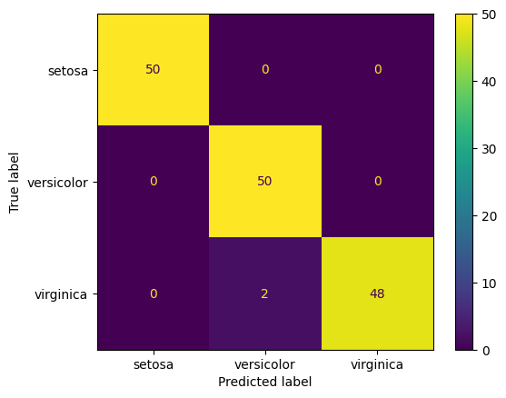
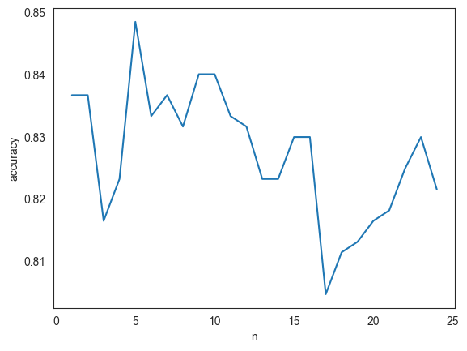
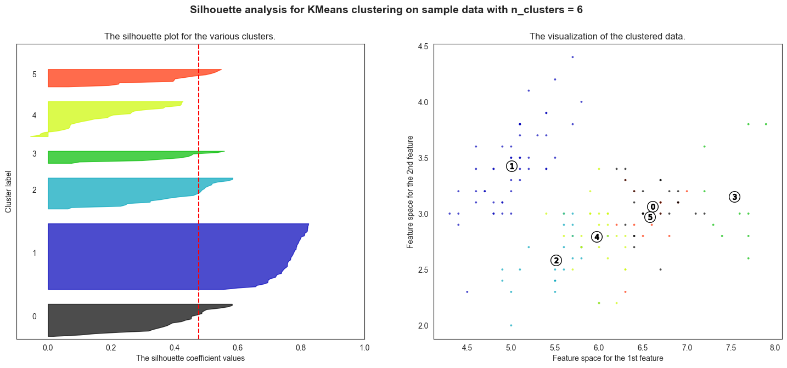

Machine Learning and Modeling
What we will cover
In the previous chapters, we looked at the larger field of artificial intelligence which relates to automating intellectual tasks performed by humans. At one time, it was thought that all human decision making could be coded as a set of rules, which, if followed, would mimic intelligence. The idea was that while these rules could be extremely complex in terms of their length and count, and in the way these were nested with each other, but in the end a set of properly structured if-else rules held the key to creating an artificial mind.
Of course, we know now that is not accurate. Rule based systems cannot generalize from patterns like the human mind does, and tend to be brittle to the point that they can be practically unusable.
Machine learning algorithms attempt to identify patterns in the data with which they create a solution to solve problems that haven't been seen before. That is the topic for the discussion in this chapter.
Deep learning is a special case (or a subset) of machine learning where layers of data abstractions (called neural networks) are used. However, you may hear of a distinction being sometimes made between machine learning, also sometimes called 'shallow learning', from deep learning that we will cover in the next chapter. Machine learning is sometimes called 'shallow learning' because it is based on a single layer of data transformations. It is called so to distinguish it from 'deep learning' that relies upon multiple layers of data transformations, with each layer extracting a different elements of useful information from the input.
This is not to suggest that machine learning is less useful or less powerful than deep learning - on the contrary simpler algorithms regularly beat deep learning algorithms for certain kinds of tasks. The type of learning to use is driven by the use case, performance obtained, and the desired explainability.
Next, we will cover the key machine learning algorithms that are used for classification, regression and clustering. We will cover deep learning in the next chapter.
Agenda:
- Decision Trees
- Random Forest
- XGBoost
- Linear Discriminant Analysis
- Support Vector Machines
- Naïve Bayes
- K-Nearest Neighbors
- K-Means Clustering
- Hierarchical Clustering
All our work will follow the ML workflow discussed earlier, and repeated below:
- Prepare your data – cleanse, convert to numbers, etc
- Split the data into training and test sets
- Training sets are what algorithms learn from
- Test sets are the ‘hold-out’ data on which model effectiveness is measured
- No set rules, often a 80:20 split between train and test data suffices. If there is a lot of training data, you may keep a smaller number as the test set.
- Fit a model.
- Check model accuracy based on the test set.
- Use for predictions.
What you need to think about
As we cover the algorithms, think about the below ideas for each.
- What is the conceptual basis for the algorithm?
- This will help you think about the problems the algorithm can be applied to,
- You should also think about the parameters you can control in the model,
- You should think about model explainability, how essential is it to your use case, and who your audience is.
- Do you need to scale/standardize the data?
- Or can you use the raw data as is?
- Whether it can perform regression, classification or clustering
- Regression models help forecast numeric quantities, while classification algorithms help determine class membership.
- Some algorithms can only perform either regression or classification, while others can do both.
- If it is a classification algorithm, does it provide just the class membership, or probability estimates
- If reliable probability estimates are available from the model, you can perform more advanced model evaluations, and tweak the probability cut-off to obtain your desired True Positive/False Positive rates.
Some library imports first...
import numpy as np
import pandas as pd
import statsmodels.api as sm
import matplotlib.pyplot as plt
from sklearn.datasets import load_iris
import seaborn as sns
from sklearn import tree
from sklearn.metrics import confusion_matrix, accuracy_score, classification_report
from sklearn.metrics import mean_absolute_error, mean_squared_error, ConfusionMatrixDisplay
from sklearn import metrics
# from sklearn.metrics import mean_absolute_percentage_error
from sklearn.preprocessing import StandardScaler, LabelEncoder
from sklearn.model_selection import train_test_split
from sklearn.discriminant_analysis import LinearDiscriminantAnalysis
from sklearn.ensemble import RandomForestClassifier
from sklearn import svm
import sklearn.preprocessing as preproc
Decision Trees
Decision Trees (DTs) are a non-parametric supervised learning method used for classification and regression. The goal is to create a model that predicts the value of a target variable by learning simple decision rules inferred from the data features. In simple words, decision trees are a collection of if/else conditions that are applied to data till a prediction is reached. Trees are constructed by splitting data by a variable, and then doing the same again and again till the desired level of accuracy is reached (or we run out of data). Trees can be visualized, and are therefore easier to interpret – and in that sense they are a ‘white box model’.
Trivial Example
Consider a made-up dataset where we know the employment and housing status of our customers, and whether they have paid back or defaulted on their loans. When a new customer requests a loan, can we use this data to decide the whether there is likely to be a default?
We would like the ‘leaf nodes’ to be pure, ie contain instances that tend to belong to the same class.
Several practical issues arise in the above example:
- Attributes rarely neatly split a group. In the made up example, everything lined up neatly but rarely will in reality.
- How does one select what order to select attributes in? We could have started with housing instead of looking at whether a person was an employee or not.
- Many attributes will not be binary, may have multiple unique values.
- Some attributes may be numeric. For example, we may know their credit scores. In such a case, how do we split the nodes?
- Finally, how do we decide we are done? Should we keep going till we run out of variables, or till all leaf nodes are pure?
Measuring Purity - Entropy and Gini Impurity
Entropy
The most common splitting criterion is called information gain, and is based on a measure called entropy.
Entropy is a measure of disorder that can be applied to a collection.
Disorder corresponds to how mixed (impure) the group is with respect to the properties of interest.
A node is pure when entropy = 0. So we are looking for ways to minimize entropy.
Gini Impurity
Another measure of impurity is the Gini Impurity.
Like entropy, the Gini Impurity has a minimum of 0. In a two class problem, the maximum value for the Gini Impurity will be 0.5. Both Entropy and the Gini Impurity behave similarly, the Gini Impurity is supposedly less computationally intensive.
With entropy as the measure of disorder, we calculate Information Gain offered by each attribute when used as the basis of segmentation.
Information gain is the reduction in entropy by splitting our data on the basis of a single attribute.
For our toy example, the entropy for the top parent node was 0.95. This was reduced to 0.41 at the next child node, calculated as . We start our segmentation with the attribute that provides the most information gain.
Fortunately, automated algorithms do this for us, so we do not have to calculate any of this. But the concept of information gain and how regression tree algorithms decide to split the data is important to be aware of.
Toy Example Continued
Let us continue the example introduced earlier.
# Entropy before the first split
entropy1 = -((6/16) * np.log2(6/16))-((10/16) * np.log2(10/16))
entropy1
0.954434002924965
# Entroy after the split
entropy2 = \
(8/16) * (-(8/8) * np.log2(8/8)) \
+ \
((8/16) * (- (2/8) * np.log2(2/8) - (6/8) * np.log2(6/8) ))
entropy2
0.4056390622295664
#Information Gain
entropy1 - entropy2
0.5487949406953987
Another simple example
We look at another example where we try to build a decision tree to predict whether a debt was written-off for a customer given other attributes.
df = pd.read_excel('write-off.xlsx')
df
| Name | Balance | Age | Employed | Write-off | |
|---|---|---|---|---|---|
| 0 | Mike | 200000 | 42 | no | yes |
| 1 | Mary | 35000 | 33 | yes | no |
| 2 | Claudio | 115000 | 40 | no | no |
| 3 | Robert | 29000 | 23 | yes | yes |
| 4 | Dora | 72000 | 31 | no | no |
Balance, Age and Employed are independent variables, and Write-off is the predicted variable. Of these, the Write-off and Employed columns are strings and have to be converted to numerical variables so they can be used in algorithms.
df['Write-off'] = df['Write-off'].astype('category') #convert to category
df['write-off-label'] = df['Write-off'].cat.codes #use category codes as labels
df = pd.get_dummies(df, columns=["Employed"]) #one hot encoding using pandas
df
| Name | Balance | Age | Write-off | write-off-label | Employed_no | Employed_yes | |
|---|---|---|---|---|---|---|---|
| 0 | Mike | 200000 | 42 | yes | 1 | True | False |
| 1 | Mary | 35000 | 33 | no | 0 | False | True |
| 2 | Claudio | 115000 | 40 | no | 0 | True | False |
| 3 | Robert | 29000 | 23 | yes | 1 | False | True |
| 4 | Dora | 72000 | 31 | no | 0 | True | False |
type(df['Write-off'])
pandas.core.series.Series
df = df.iloc[:,[0,3,4,1,2,5,6]]
df
| Name | Write-off | write-off-label | Balance | Age | Employed_no | Employed_yes | |
|---|---|---|---|---|---|---|---|
| 0 | Mike | yes | 1 | 200000 | 42 | True | False |
| 1 | Mary | no | 0 | 35000 | 33 | False | True |
| 2 | Claudio | no | 0 | 115000 | 40 | True | False |
| 3 | Robert | yes | 1 | 29000 | 23 | False | True |
| 4 | Dora | no | 0 | 72000 | 31 | True | False |
df.iloc[:, 2:]
| write-off-label | Balance | Age | Employed_no | Employed_yes | |
|---|---|---|---|---|---|
| 0 | 1 | 200000 | 42 | True | False |
| 1 | 0 | 35000 | 33 | False | True |
| 2 | 0 | 115000 | 40 | True | False |
| 3 | 1 | 29000 | 23 | False | True |
| 4 | 0 | 72000 | 31 | True | False |
# This below command is required only to get back to the home folder if you aren't there already
# import os
# os.chdir('/home/jovyan')
X = df.iloc[:,3:]
y = df.iloc[:,2]
clf = tree.DecisionTreeClassifier()
clf = clf.fit(X, y)
import graphviz
dot_data = tree.export_graphviz(clf, out_file=None)
graph = graphviz.Source(dot_data)
# graph.render("df")
dot_data = tree.export_graphviz(clf, out_file=None,
feature_names=X.columns,
class_names=['yes', 'no'], # Plain English names for classes_
filled=True, rounded=True,
special_characters=True)
graph = graphviz.Source(dot_data)
graph
clf.classes_
array([0, 1], dtype=int8)
y
0 1
1 0
2 0
3 1
4 0
Name: write-off-label, dtype: int8
Iris Flower Dataset
We consider the Iris dataset, a multivariate data set introduced by the British statistician and biologist Ronald Fisher in a 1936 paper. The data set consists of 50 samples from each of three species of Iris (Iris setosa, Iris virginica and Iris versicolor).
Four features were measured from each sample: the length and the width of the sepals and petals, in centimeters.
Source: Wikipedia
Image Source/Attribution: https://commons.wikimedia.org/w/index.php?curid=248095
Difference between a petal and a sepal:
Scikit Learn’s decision tree classifier algorithm, combined with another package called graphviz, can provide decision trees together with good graphing capabilities.
Unfortunately, sklearn requires all data to be numeric and as numpy arrays. This creates practical problems for the data analyst – categorical variables have to be labeled or one-hot encoded, and their plain English meanings have to be tracked separately.
# Load the data
iris = sm.datasets.get_rdataset('iris').data
iris.sample(6)
| Sepal.Length | Sepal.Width | Petal.Length | Petal.Width | Species | |
|---|---|---|---|---|---|
| 77 | 6.7 | 3.0 | 5.0 | 1.7 | versicolor |
| 103 | 6.3 | 2.9 | 5.6 | 1.8 | virginica |
| 25 | 5.0 | 3.0 | 1.6 | 0.2 | setosa |
| 126 | 6.2 | 2.8 | 4.8 | 1.8 | virginica |
| 55 | 5.7 | 2.8 | 4.5 | 1.3 | versicolor |
| 131 | 7.9 | 3.8 | 6.4 | 2.0 | virginica |
Our task is: Based on these features, can we create a decision tree to distinguish between the three species of the Iris flower?
# Let us look at some basic descriptive stats for each of the flower species.
iris.pivot_table(columns = ['Species'], aggfunc = [np.mean, min, max]).transpose()
| Petal.Length | Petal.Width | Sepal.Length | Sepal.Width | ||
|---|---|---|---|---|---|
| Species | |||||
| mean | setosa | 1.462 | 0.246 | 5.006 | 3.428 |
| versicolor | 4.260 | 1.326 | 5.936 | 2.770 | |
| virginica | 5.552 | 2.026 | 6.588 | 2.974 | |
| min | setosa | 1.000 | 0.100 | 4.300 | 2.300 |
| versicolor | 3.000 | 1.000 | 4.900 | 2.000 | |
| virginica | 4.500 | 1.400 | 4.900 | 2.200 | |
| max | setosa | 1.900 | 0.600 | 5.800 | 4.400 |
| versicolor | 5.100 | 1.800 | 7.000 | 3.400 | |
| virginica | 6.900 | 2.500 | 7.900 | 3.800 |
# Next, we build the decision tree
import matplotlib.pyplot as plt
from sklearn.datasets import load_iris
from sklearn import tree
iris = load_iris()
X, y = iris.data, iris.target
# Train-test split
from sklearn.model_selection import train_test_split
X_train, X_test, y_train, y_test = train_test_split(X, y, test_size = 0.20)
# Create the classifier and visualize the decision tree
clf = tree.DecisionTreeClassifier()
clf = clf.fit(X_train, y_train)
import graphviz
dot_data = tree.export_graphviz(clf, out_file=None)
graph = graphviz.Source(dot_data)
graph.render("iris")
dot_data = tree.export_graphviz(clf, out_file=None,
feature_names=iris.feature_names,
class_names=iris.target_names,
filled=True, rounded=True,
special_characters=True)
graph = graphviz.Source(dot_data)
graph
# Another way to build the tree is something as simple as
# typing `tree.plot_tree(clf)` but the above code gives
# us much better results.
print(tree.plot_tree(clf))
[Text(0.4444444444444444, 0.9166666666666666, 'x[2] <= 2.5\ngini = 0.666\nsamples = 120\nvalue = [43, 38, 39]'), Text(0.3333333333333333, 0.75, 'gini = 0.0\nsamples = 43\nvalue = [43, 0, 0]'), Text(0.5555555555555556, 0.75, 'x[3] <= 1.75\ngini = 0.5\nsamples = 77\nvalue = [0, 38, 39]'), Text(0.3333333333333333, 0.5833333333333334, 'x[2] <= 5.35\ngini = 0.139\nsamples = 40\nvalue = [0, 37, 3]'), Text(0.2222222222222222, 0.4166666666666667, 'x[2] <= 4.95\ngini = 0.051\nsamples = 38\nvalue = [0, 37, 1]'), Text(0.1111111111111111, 0.25, 'gini = 0.0\nsamples = 35\nvalue = [0, 35, 0]'), Text(0.3333333333333333, 0.25, 'x[1] <= 2.45\ngini = 0.444\nsamples = 3\nvalue = [0, 2, 1]'), Text(0.2222222222222222, 0.08333333333333333, 'gini = 0.0\nsamples = 1\nvalue = [0, 0, 1]'), Text(0.4444444444444444, 0.08333333333333333, 'gini = 0.0\nsamples = 2\nvalue = [0, 2, 0]'), Text(0.4444444444444444, 0.4166666666666667, 'gini = 0.0\nsamples = 2\nvalue = [0, 0, 2]'), Text(0.7777777777777778, 0.5833333333333334, 'x[2] <= 4.85\ngini = 0.053\nsamples = 37\nvalue = [0, 1, 36]'), Text(0.6666666666666666, 0.4166666666666667, 'x[0] <= 5.95\ngini = 0.5\nsamples = 2\nvalue = [0, 1, 1]'), Text(0.5555555555555556, 0.25, 'gini = 0.0\nsamples = 1\nvalue = [0, 1, 0]'), Text(0.7777777777777778, 0.25, 'gini = 0.0\nsamples = 1\nvalue = [0, 0, 1]'), Text(0.8888888888888888, 0.4166666666666667, 'gini = 0.0\nsamples = 35\nvalue = [0, 0, 35]')]
# List categories in the classifier
iris.target_names
array(['setosa', 'versicolor', 'virginica'], dtype='<U10')
# Perform predictions
clf.predict(X_test)
array([1, 1, 1, 2, 1, 1, 1, 1, 0, 1, 1, 0, 1, 0, 1, 2, 1, 2, 2, 1, 2, 2,
1, 0, 2, 0, 2, 0, 2, 0])
Confusion Matrix and Classification Report
We did not split the data into train/test sets. For now, we will evaluate the model based on the entire data set (ie, on the training set).
For this trivial example, the decision tree has done a perfect job of predicting flower species.
confusion_matrix(y_true = y_test, y_pred = clf.predict(X_test))
array([[ 7, 0, 0],
[ 0, 12, 0],
[ 0, 2, 9]], dtype=int64)
print(classification_report(y_true = y_test, y_pred = clf.predict(X_test)))
precision recall f1-score support
0 1.00 1.00 1.00 7
1 0.86 1.00 0.92 12
2 1.00 0.82 0.90 11
accuracy 0.93 30
macro avg 0.95 0.94 0.94 30
weighted avg 0.94 0.93 0.93 30
ConfusionMatrixDisplay.from_estimator(clf, X_test, y_test, display_labels=iris.target_names);
Confusion Matrix for All Data
# Just for the heck of it, let us predict the entire dataset using our model,
# and check the results
print(classification_report(y_true = y, y_pred = clf.predict(X)))
precision recall f1-score support
0 1.00 1.00 1.00 50
1 0.96 1.00 0.98 50
2 1.00 0.96 0.98 50
accuracy 0.99 150
macro avg 0.99 0.99 0.99 150
weighted avg 0.99 0.99 0.99 150
ConfusionMatrixDisplay.from_estimator(clf, X, y, display_labels=iris.target_names);

Class probabilities with decision trees
Decision Trees do not do a great job of predicting the probability of belonging to a particular class, for example, when compared to Logistic Regression.
Probabilities for class membership are just the proportion of observations in a particular class in the appropriate leaf node. For a tree with unlimited nodes, we will always mostly have p=100% for most predictions.
Scikit Learn provides a method to predict probabilities, clf.predict_proba(). If we apply this to our decision tree (first five observations only), we get as below:
# As can be seen below, the model does not give class probabilities
clf.predict(X)
array([0, 0, 0, 0, 0, 0, 0, 0, 0, 0, 0, 0, 0, 0, 0, 0, 0, 0, 0, 0, 0, 0,
0, 0, 0, 0, 0, 0, 0, 0, 0, 0, 0, 0, 0, 0, 0, 0, 0, 0, 0, 0, 0, 0,
0, 0, 0, 0, 0, 0, 1, 1, 1, 1, 1, 1, 1, 1, 1, 1, 1, 1, 1, 1, 1, 1,
1, 1, 1, 1, 1, 1, 1, 1, 1, 1, 1, 1, 1, 1, 1, 1, 1, 1, 1, 1, 1, 1,
1, 1, 1, 1, 1, 1, 1, 1, 1, 1, 1, 1, 2, 2, 2, 2, 2, 2, 1, 2, 2, 2,
2, 2, 2, 2, 2, 2, 2, 2, 2, 2, 2, 2, 2, 2, 2, 2, 2, 2, 2, 2, 2, 2,
2, 1, 2, 2, 2, 2, 2, 2, 2, 2, 2, 2, 2, 2, 2, 2, 2, 2])
# Get class probabilities
clf.predict_proba(X[:5])
array([[1., 0., 0.],
[1., 0., 0.],
[1., 0., 0.],
[1., 0., 0.],
[1., 0., 0.]])
Predictions with decision trees
With this model, how do I predict if I have the measurements for a new flower?
Once a Decision Tree Classifier is built, new predictions can be obtained using the predict(X) method.
Imagine we have a new flower with dimensions 5, 3, 1 and 2 and need to predict its species. Since we have the featureset, we feed this information to the model and obtain the prediction.
Refer below for the steps in Python
# let us remind ourselves of what features need to predict a flower's species
iris.feature_names
['sepal length (cm)',
'sepal width (cm)',
'petal length (cm)',
'petal width (cm)']
# let us also look at existing feature set
X[:4]
array([[5.1, 3.5, 1.4, 0.2],
[4.9, 3. , 1.4, 0.2],
[4.7, 3.2, 1.3, 0.2],
[4.6, 3.1, 1.5, 0.2]])
# Next, the measurements for the new flower
new_flower = [[5,3,1,2]]
# Now the prediction
clf.predict(new_flower)
array([0])
# The above means it is the category at index 1 in the target
# Let us look at what the target names are.
# We see that the 'versicolor' is at index 1, so that is the prediction for the new flower
iris.target_names
array(['setosa', 'versicolor', 'virginica'], dtype='<U10')
# or, all of the above in one line
print(iris.target_names[clf.predict(new_flower)])
['setosa']
Decision Tree Regression
Decision trees can also be applied to estimating continuous values for the target variable.
They work in the same way as decision trees for classification, except that information gain is measured differently, eg by a reduction in standard deviation at the node level.
So splits for a node would be performed based on a variable/value that creates the maximum reduction in the standard deviation of the y values in the node.
The prediction is then the average of the observations in the leaf node.
As an example, let us consider the Boston House Price dataset that is built into sklearn. There are 506 rows × 14 variables
# Load the data
from sklearn.datasets import fetch_california_housing
housing = fetch_california_housing()
X = housing['data']
y = housing['target']
features = housing['feature_names']
DESCR = housing['DESCR']
cali_df = pd.DataFrame(X, columns = features)
cali_df.insert(0,'medv', y)
cali_df
| medv | MedInc | HouseAge | AveRooms | AveBedrms | Population | AveOccup | Latitude | Longitude | |
|---|---|---|---|---|---|---|---|---|---|
| 0 | 4.526 | 8.3252 | 41.0 | 6.984127 | 1.023810 | 322.0 | 2.555556 | 37.88 | -122.23 |
| 1 | 3.585 | 8.3014 | 21.0 | 6.238137 | 0.971880 | 2401.0 | 2.109842 | 37.86 | -122.22 |
| 2 | 3.521 | 7.2574 | 52.0 | 8.288136 | 1.073446 | 496.0 | 2.802260 | 37.85 | -122.24 |
| 3 | 3.413 | 5.6431 | 52.0 | 5.817352 | 1.073059 | 558.0 | 2.547945 | 37.85 | -122.25 |
| 4 | 3.422 | 3.8462 | 52.0 | 6.281853 | 1.081081 | 565.0 | 2.181467 | 37.85 | -122.25 |
| ... | ... | ... | ... | ... | ... | ... | ... | ... | ... |
| 20635 | 0.781 | 1.5603 | 25.0 | 5.045455 | 1.133333 | 845.0 | 2.560606 | 39.48 | -121.09 |
| 20636 | 0.771 | 2.5568 | 18.0 | 6.114035 | 1.315789 | 356.0 | 3.122807 | 39.49 | -121.21 |
| 20637 | 0.923 | 1.7000 | 17.0 | 5.205543 | 1.120092 | 1007.0 | 2.325635 | 39.43 | -121.22 |
| 20638 | 0.847 | 1.8672 | 18.0 | 5.329513 | 1.171920 | 741.0 | 2.123209 | 39.43 | -121.32 |
| 20639 | 0.894 | 2.3886 | 16.0 | 5.254717 | 1.162264 | 1387.0 | 2.616981 | 39.37 | -121.24 |
20640 rows × 9 columns
# Let us look at the data dictionary
print(DESCR)
.. _california_housing_dataset:
California Housing dataset
--------------------------
**Data Set Characteristics:**
:Number of Instances: 20640
:Number of Attributes: 8 numeric, predictive attributes and the target
:Attribute Information:
- MedInc median income in block group
- HouseAge median house age in block group
- AveRooms average number of rooms per household
- AveBedrms average number of bedrooms per household
- Population block group population
- AveOccup average number of household members
- Latitude block group latitude
- Longitude block group longitude
:Missing Attribute Values: None
This dataset was obtained from the StatLib repository.
https://www.dcc.fc.up.pt/~ltorgo/Regression/cal_housing.html
The target variable is the median house value for California districts,
expressed in hundreds of thousands of dollars ($100,000).
This dataset was derived from the 1990 U.S. census, using one row per census
block group. A block group is the smallest geographical unit for which the U.S.
Census Bureau publishes sample data (a block group typically has a population
of 600 to 3,000 people).
A household is a group of people residing within a home. Since the average
number of rooms and bedrooms in this dataset are provided per household, these
columns may take surprisingly large values for block groups with few households
and many empty houses, such as vacation resorts.
It can be downloaded/loaded using the
:func:`sklearn.datasets.fetch_california_housing` function.
.. topic:: References
- Pace, R. Kelley and Ronald Barry, Sparse Spatial Autoregressions,
Statistics and Probability Letters, 33 (1997) 291-297
We can fit a decision tree regressor to the data.
1. First, we load the data.
1. Next, we split the data into train and test sets, keeping 20% for the test set.
1. Then we fit a model to the training data, and store the model object in the variable model.
1. Next we use the model to predict the test cases.
1. Finally, we evaluate the results.
# Train-test split
from sklearn.model_selection import train_test_split
X_train, X_test, y_train, y_test = train_test_split(X, y, test_size = 0.20)
# model = tree.DecisionTreeRegressor()
model = tree.DecisionTreeRegressor(max_depth=9)
model = model.fit(X_train, y_train)
model.predict(X_test)
array([3.0852 , 0.96175 , 0.96001341, ..., 2.26529224, 2.15065625,
2.02124038])
print(model.tree_.max_depth)
9
y_pred = model.predict(X_test)
print('MSE = ', mean_squared_error(y_test,y_pred))
print('RMSE = ', np.sqrt(mean_squared_error(y_test,y_pred)))
print('MAE = ', mean_absolute_error(y_test,y_pred))
MSE = 0.38773905612449
RMSE = 0.622686964794101
MAE = 0.4204310076086696
# Just checking to see if we have everything working right
print('Count of predictions:', len(y_pred))
print('Count of ground truth labels:', len(y_test))
Count of predictions: 4128
Count of ground truth labels: 4128
# We plot the actual home prices vs the predictions in a scatterplot
plt.figure(figsize = (8,8))
plt.scatter(y_test, y_pred, alpha=0.5)
plt.title('Actual vs Predicted Home Value in $000s \n Closer to red line (identity) \
means more accurate prediction')
plt.plot( [0,5],[0,5], color='red' )
plt.xlabel("Actual")
plt.ylabel("Predicted")
Text(0, 0.5, 'Predicted')
# Context for the RMSE. What is the mean, min and max?
cali_df.medv.describe()
count 20640.000000
mean 2.068558
std 1.153956
min 0.149990
25% 1.196000
50% 1.797000
75% 2.647250
max 5.000010
Name: medv, dtype: float64
# R-squared calculation
pd.DataFrame({'actual':y_test, 'predicted':y_pred}).corr()**2
| actual | predicted | |
|---|---|---|
| actual | 1.000000 | 0.720348 |
| predicted | 0.720348 | 1.000000 |
How well did my model generalize?
Let us see how my model did on the training data
# R-squared
pd.DataFrame({'actual':y_train, 'predicted':model.predict(X_train)}).corr()**2
| actual | predicted | |
|---|---|---|
| actual | 1.000000 | 0.794566 |
| predicted | 0.794566 | 1.000000 |
# Calculate MSE, RMSE and MAE
y_pred = model.predict(X_train)
print('MSE = ', mean_squared_error(y_train,y_pred))
print('RMSE = ', np.sqrt(mean_squared_error(y_train,y_pred)))
print('MAE = ', mean_absolute_error(y_train,y_pred))
MSE = 0.27139484003226105
RMSE = 0.5209556987232802
MAE = 0.3574534397649355
# Scatterplot for actual vs predicted on TRAINING data
plt.figure(figsize = (8,8))
plt.scatter(y_train, model.predict(X_train), alpha=0.5)
plt.title('Actual vs Predicted Home Value in $000s \n Closer to red line (identity) means more accurate prediction\n TRAINING DATA')
plt.plot( [0,5],[0,5], color='red' )
plt.xlabel("Actual")
plt.ylabel("Predicted")
Text(0, 0.5, 'Predicted')
Addressing Overfitting in Decision Trees
The simplest way to address overfitting in decision trees is to limit the depth of the trees using the max_depth parameter when fitting the model. The depth of a decision tree is the length of the longest path from a root to a leaf.
Find out the current value of the max tree depth in the example (print(model.tree_.max_depth)), and change the max_depth parameter to see if you can reduce the RMSE for the test set.
You can also change the minimum count of samples required to be present in a leaf node (min_samples_leaf), and the minimum number of observations required before a node is allowed to split (min_samples_split).
Random Forest
A random forest fits a number of decision tree classifiers on various sub-samples of the dataset and uses averaging to improve the predictive accuracy and control over-fitting.
Random Forest almost always gives results superior to decision trees, and is therefore preferred over decision trees. However, because the results provided by random forest are the result of averaging multiple trees, explainability can become an issue.
Therefore decision trees may still be preferred over random forest in the interest of explainability.
At this point, it is important to introduce two new concepts: bootstrapping, and bagging.
Bootstrapping
In bootstrapping, you treat the sample as if it were the population, and draw repeated samples of equal size from it. The samples are drawn with replacement. Now think that for each of these new samples you calculate a population characteristic, say the median. Because you potentially have a very large number of samples (theoretically infinite), you can get a distribution of the median of the population from our original single sample.
If we hadn’t done bootstrapping (ie resample from the sample with replacement), we would have only one point estimate for the median.
Bootstrapping improves the estimation process and reduces variance.
Bagging (Bootstrap + Aggregation)
Bagging is a type of ensemble learning. Ensemble learning is where we combine multiple models to produce a better prediction or classification.
In bagging, we produce multiple different training sets (called bootstrap samples), by sampling with replacement from the original dataset. Then, for each bootstrap sample, we build a model.
The results in an ensemble of models, where each model votes with the equal weight. Typically, the goal of this procedure is to reduce the variance of the model of interest (e.g. decision trees).
The Random Forest algorithm is when the above technique is applied to decision trees.
Random Forests
Random forests are an example of ensemble learning, where multiple models are combined to produce a better prediction or classification.
Random forests are collections of trees. Predictions are equivalent to the average prediction of component trees.
Multiple decision trees are created from the source data using a technique called bagging. Multiple different training sets (called bootstrap samples) are created by sampling with replacement from the original dataset.
Then, for each bootstrap sample, we build a model. The results in an ensemble of models, where each model votes with the equal weight. Typically, the goal of this procedure is to reduce the variance of the model of interest.
When applied to decision trees, this becomes random forest.
Random Forest for Classification
# load the data
college = pd.read_csv('collegePlace.csv')
college.shape
(2966, 8)
college
| Age | Gender | Stream | Internships | CGPA | Hostel | HistoryOfBacklogs | PlacedOrNot | |
|---|---|---|---|---|---|---|---|---|
| 0 | 22 | Male | Electronics And Communication | 1 | 8 | 1 | 1 | 1 |
| 1 | 21 | Female | Computer Science | 0 | 7 | 1 | 1 | 1 |
| 2 | 22 | Female | Information Technology | 1 | 6 | 0 | 0 | 1 |
| 3 | 21 | Male | Information Technology | 0 | 8 | 0 | 1 | 1 |
| 4 | 22 | Male | Mechanical | 0 | 8 | 1 | 0 | 1 |
| ... | ... | ... | ... | ... | ... | ... | ... | ... |
| 2961 | 23 | Male | Information Technology | 0 | 7 | 0 | 0 | 0 |
| 2962 | 23 | Male | Mechanical | 1 | 7 | 1 | 0 | 0 |
| 2963 | 22 | Male | Information Technology | 1 | 7 | 0 | 0 | 0 |
| 2964 | 22 | Male | Computer Science | 1 | 7 | 0 | 0 | 0 |
| 2965 | 23 | Male | Civil | 0 | 8 | 0 | 0 | 1 |
2966 rows × 8 columns
# divide the dataset into train and test sets, separating the features and target variable
X = college[['Age', 'Internships', 'CGPA', 'Hostel', 'HistoryOfBacklogs']].values
y = college['PlacedOrNot'].values
X_train, X_test, y_train, y_test = train_test_split(X, y, test_size=0.2)
# classify using random forest classifier
RandomForest = RandomForestClassifier()
model_rf = RandomForest.fit(X_train, y_train)
pred = model_rf.predict(X_test)
print(classification_report(y_true = y_test, y_pred = pred))
ConfusionMatrixDisplay.from_estimator(model_rf, X_test, y_test);
precision recall f1-score support
0 0.79 0.96 0.87 279
1 0.96 0.77 0.86 315
accuracy 0.86 594
macro avg 0.87 0.87 0.86 594
weighted avg 0.88 0.86 0.86 594
# get probabilities for each observation in the test set
model_rf.predict_proba(X_test)
array([[0.92120988, 0.07879012],
[0.79331614, 0.20668386],
[0. , 1. ],
...,
[0.01571429, 0.98428571],
[0. , 1. ],
[0.73565005, 0.26434995]])
y_test
array([0, 1, 1, 1, 0, 0, 1, 1, 1, 1, 1, 0, 1, 1, 1, 0, 0, 0, 1, 1, 0, 0,
0, 0, 1, 1, 1, 0, 0, 1, 1, 1, 0, 1, 1, 1, 1, 1, 1, 0, 1, 1, 1, 0,
0, 1, 0, 1, 1, 0, 0, 1, 1, 0, 0, 1, 1, 1, 1, 0, 1, 0, 0, 1, 1, 0,
0, 1, 1, 1, 0, 0, 0, 1, 1, 0, 0, 1, 1, 1, 1, 0, 1, 1, 1, 1, 1, 0,
1, 0, 1, 0, 1, 0, 0, 0, 0, 0, 0, 1, 1, 0, 1, 1, 0, 0, 1, 1, 1, 1,
1, 1, 0, 1, 1, 0, 1, 0, 0, 1, 1, 1, 0, 1, 1, 0, 1, 1, 1, 0, 1, 1,
1, 0, 0, 1, 0, 1, 0, 0, 1, 0, 0, 1, 1, 1, 0, 1, 1, 1, 1, 0, 1, 0,
0, 0, 1, 0, 0, 1, 0, 0, 0, 1, 0, 0, 0, 1, 1, 1, 0, 1, 1, 0, 0, 0,
0, 0, 0, 0, 1, 0, 1, 0, 1, 0, 0, 1, 0, 0, 1, 1, 1, 0, 1, 1, 0, 0,
0, 0, 1, 1, 0, 1, 0, 0, 1, 0, 1, 0, 0, 1, 1, 0, 1, 0, 0, 1, 1, 0,
1, 0, 0, 0, 1, 1, 1, 1, 0, 0, 1, 1, 0, 1, 1, 1, 0, 1, 1, 0, 0, 1,
0, 0, 0, 1, 1, 0, 0, 1, 1, 1, 1, 1, 1, 1, 1, 1, 1, 1, 1, 0, 0, 0,
1, 0, 0, 1, 1, 0, 0, 1, 0, 0, 1, 0, 0, 0, 0, 1, 0, 1, 0, 1, 1, 0,
0, 1, 1, 0, 0, 1, 0, 1, 0, 0, 0, 0, 0, 0, 1, 1, 1, 1, 0, 1, 0, 1,
0, 0, 0, 1, 1, 0, 0, 0, 0, 0, 1, 1, 0, 0, 1, 0, 0, 1, 1, 1, 1, 1,
1, 1, 0, 1, 1, 1, 0, 0, 0, 1, 0, 0, 1, 0, 0, 0, 1, 0, 0, 1, 1, 1,
0, 0, 1, 1, 1, 0, 1, 1, 0, 0, 0, 0, 1, 1, 0, 1, 1, 0, 0, 1, 0, 0,
1, 0, 1, 0, 1, 0, 0, 0, 0, 0, 0, 1, 1, 1, 0, 1, 0, 1, 1, 1, 0, 1,
1, 1, 1, 1, 0, 0, 1, 1, 0, 0, 0, 1, 1, 1, 0, 1, 0, 0, 1, 1, 0, 1,
1, 0, 1, 0, 0, 1, 1, 1, 1, 0, 0, 0, 1, 0, 1, 1, 1, 0, 1, 1, 0, 0,
0, 0, 1, 0, 0, 0, 0, 1, 1, 0, 1, 0, 1, 0, 1, 1, 1, 1, 1, 0, 0, 1,
1, 1, 0, 0, 0, 1, 0, 1, 0, 0, 0, 1, 0, 1, 1, 0, 1, 1, 1, 1, 1, 0,
0, 0, 1, 1, 1, 0, 0, 1, 1, 1, 1, 1, 0, 0, 1, 0, 1, 0, 0, 0, 1, 1,
1, 1, 1, 0, 1, 0, 0, 1, 1, 0, 1, 0, 0, 0, 1, 0, 1, 1, 1, 1, 1, 0,
0, 1, 0, 1, 1, 0, 1, 1, 1, 0, 1, 1, 0, 0, 0, 0, 1, 0, 1, 0, 0, 0,
1, 0, 0, 1, 0, 1, 0, 1, 1, 1, 1, 0, 1, 1, 1, 1, 0, 0, 0, 1, 0, 1,
1, 1, 1, 1, 0, 1, 0, 0, 0, 0, 1, 1, 1, 0, 0, 1, 0, 0, 0, 1, 1, 1],
dtype=int64)
# get probabilities for each observation in the test set
pred_prob = model_rf.predict_proba(X_test)[:,1]
model_rf.classes_
array([0, 1], dtype=int64)
# Source for code below: https://stackoverflow.com/questions/25009284/how-to-plot-roc-curve-in-python
fpr, tpr, thresholds = metrics.roc_curve(y_test, pred_prob)
roc_auc = metrics.auc(fpr, tpr)
plt.figure(figsize = (9,8))
plt.title('Receiver Operating Characteristic')
plt.plot(fpr, tpr, 'b', label = 'AUC = %0.2f' % roc_auc)
plt.legend(loc = 'lower right')
plt.plot([0, 1], [0, 1],'r--')
plt.xlim([0, 1])
plt.ylim([0, 1])
plt.ylabel('True Positive Rate')
plt.xlabel('False Positive Rate')
for i, txt in enumerate(thresholds):
if i in np.arange(1, len(thresholds), 10): # print every 10th point to prevent overplotting:
plt.annotate(text = round(txt,3), xy = (fpr[i], tpr[i]),
xytext=(-44, 0), textcoords='offset points',
arrowprops={'arrowstyle':"simple"}, color='green',fontsize=8)
plt.show()
threshold_dataframe = pd.DataFrame({'fpr':fpr, 'tpr': tpr, 'threshold':thresholds}).sort_values(by='threshold')
threshold_dataframe.head()
| fpr | tpr | threshold | |
|---|---|---|---|
| 91 | 1.000000 | 1.000000 | 0.000000 |
| 90 | 0.921147 | 1.000000 | 0.001429 |
| 89 | 0.906810 | 1.000000 | 0.002843 |
| 88 | 0.903226 | 1.000000 | 0.003333 |
| 87 | 0.903226 | 0.996825 | 0.006190 |
Random Forest for Regression
The Random Forest algorithm can also be used effectively for regression problems. Let us try a larger dataset this time.
We will try to predict diamond prices based on all the other attributes we know about the diamonds.
However, our data contains a number of categorical variables. We will need to convert these into numerical using one-hot encoding. Let us do that next!
from sklearn.ensemble import RandomForestRegressor
diamonds = sns.load_dataset("diamonds")
diamonds.head()
| carat | cut | color | clarity | depth | table | price | x | y | z | |
|---|---|---|---|---|---|---|---|---|---|---|
| 0 | 0.23 | Ideal | E | SI2 | 61.5 | 55.0 | 326 | 3.95 | 3.98 | 2.43 |
| 1 | 0.21 | Premium | E | SI1 | 59.8 | 61.0 | 326 | 3.89 | 3.84 | 2.31 |
| 2 | 0.23 | Good | E | VS1 | 56.9 | 65.0 | 327 | 4.05 | 4.07 | 2.31 |
| 3 | 0.29 | Premium | I | VS2 | 62.4 | 58.0 | 334 | 4.20 | 4.23 | 2.63 |
| 4 | 0.31 | Good | J | SI2 | 63.3 | 58.0 | 335 | 4.34 | 4.35 | 2.75 |
diamonds = pd.get_dummies(diamonds)
diamonds.head()
| carat | depth | table | price | x | y | z | cut_Ideal | cut_Premium | cut_Very Good | ... | color_I | color_J | clarity_IF | clarity_VVS1 | clarity_VVS2 | clarity_VS1 | clarity_VS2 | clarity_SI1 | clarity_SI2 | clarity_I1 | |
|---|---|---|---|---|---|---|---|---|---|---|---|---|---|---|---|---|---|---|---|---|---|
| 0 | 0.23 | 61.5 | 55.0 | 326 | 3.95 | 3.98 | 2.43 | True | False | False | ... | False | False | False | False | False | False | False | False | True | False |
| 1 | 0.21 | 59.8 | 61.0 | 326 | 3.89 | 3.84 | 2.31 | False | True | False | ... | False | False | False | False | False | False | False | True | False | False |
| 2 | 0.23 | 56.9 | 65.0 | 327 | 4.05 | 4.07 | 2.31 | False | False | False | ... | False | False | False | False | False | True | False | False | False | False |
| 3 | 0.29 | 62.4 | 58.0 | 334 | 4.20 | 4.23 | 2.63 | False | True | False | ... | True | False | False | False | False | False | True | False | False | False |
| 4 | 0.31 | 63.3 | 58.0 | 335 | 4.34 | 4.35 | 2.75 | False | False | False | ... | False | True | False | False | False | False | False | False | True | False |
5 rows × 27 columns
# Define X and y as arrays. y is the price column, X is everything else
X = diamonds.loc[:, diamonds.columns != 'price'].values
y = diamonds.price.values
# Train test split
from sklearn.model_selection import train_test_split
X_train, X_test, y_train, y_test = train_test_split(X, y, test_size = 0.20)
# Fit model
model_rf_regr = RandomForestRegressor(max_depth=2, random_state=0)
model_rf_regr.fit(X_train, y_train)
model_rf_regr.predict(X_test)
array([1054.29089419, 1054.29089419, 1054.29089419, ..., 6145.62603236,
1054.29089419, 1054.29089419])
# Evaluate model
y_pred = model_rf_regr.predict(X_test)
from sklearn.metrics import mean_absolute_error, mean_squared_error
print('MSE = ', mean_squared_error(y_test,y_pred))
print('RMSE = ', np.sqrt(mean_squared_error(y_test,y_pred)))
print('MAE = ', mean_absolute_error(y_test,y_pred))
MSE = 2757832.1354701095
RMSE = 1660.6721938631083
MAE = 1036.4110791707412
# Evaluate residuals
plt.figure(figsize = (8,8))
plt.scatter(y_test, y_pred, alpha=0.5)
plt.title('Actual vs Predicted Diamond Value\n Closer to red line (identity) means more accurate prediction')
plt.plot( [0,19000],[0,19000], color='red' )
plt.xlabel("Actual")
plt.ylabel("Predicted")
Text(0, 0.5, 'Predicted')
diamonds.price.describe()
count 53940.000000
mean 3932.799722
std 3989.439738
min 326.000000
25% 950.000000
50% 2401.000000
75% 5324.250000
max 18823.000000
Name: price, dtype: float64
# R-squared calculation
pd.DataFrame({'actual':y_test, 'predicted':y_pred}).corr()**2
| actual | predicted | |
|---|---|---|
| actual | 1.000000 | 0.827564 |
| predicted | 0.827564 | 1.000000 |
importance = model_rf_regr.feature_importances_
feature_names = diamonds.loc[:, diamonds.columns != 'price'].columns
pd.DataFrame({'Feature':feature_names, 'Importance':importance}).sort_values(by='Importance', ascending=False)
| Feature | Importance | |
|---|---|---|
| 0 | carat | 0.668208 |
| 4 | y | 0.331792 |
| 14 | color_G | 0.000000 |
| 24 | clarity_SI2 | 0.000000 |
| 23 | clarity_SI1 | 0.000000 |
| 22 | clarity_VS2 | 0.000000 |
| 21 | clarity_VS1 | 0.000000 |
| 20 | clarity_VVS2 | 0.000000 |
| 19 | clarity_VVS1 | 0.000000 |
| 18 | clarity_IF | 0.000000 |
| 17 | color_J | 0.000000 |
| 16 | color_I | 0.000000 |
| 15 | color_H | 0.000000 |
| 13 | color_F | 0.000000 |
| 1 | depth | 0.000000 |
| 12 | color_E | 0.000000 |
| 11 | color_D | 0.000000 |
| 10 | cut_Fair | 0.000000 |
| 9 | cut_Good | 0.000000 |
| 8 | cut_Very Good | 0.000000 |
| 7 | cut_Premium | 0.000000 |
| 6 | cut_Ideal | 0.000000 |
| 5 | z | 0.000000 |
| 3 | x | 0.000000 |
| 2 | table | 0.000000 |
| 25 | clarity_I1 | 0.000000 |
Random Forest Regression - Another Example
Let us look at our California Housing Dataset that we examined before to predict home prices.
# Load the data
from sklearn.datasets import fetch_california_housing
housing = fetch_california_housing()
X = housing['data']
y = housing['target']
features = housing['feature_names']
DESCR = housing['DESCR']
cali_df = pd.DataFrame(X, columns = features)
cali_df.insert(0,'medv', y)
cali_df
| medv | MedInc | HouseAge | AveRooms | AveBedrms | Population | AveOccup | Latitude | Longitude | |
|---|---|---|---|---|---|---|---|---|---|
| 0 | 4.526 | 8.3252 | 41.0 | 6.984127 | 1.023810 | 322.0 | 2.555556 | 37.88 | -122.23 |
| 1 | 3.585 | 8.3014 | 21.0 | 6.238137 | 0.971880 | 2401.0 | 2.109842 | 37.86 | -122.22 |
| 2 | 3.521 | 7.2574 | 52.0 | 8.288136 | 1.073446 | 496.0 | 2.802260 | 37.85 | -122.24 |
| 3 | 3.413 | 5.6431 | 52.0 | 5.817352 | 1.073059 | 558.0 | 2.547945 | 37.85 | -122.25 |
| 4 | 3.422 | 3.8462 | 52.0 | 6.281853 | 1.081081 | 565.0 | 2.181467 | 37.85 | -122.25 |
| ... | ... | ... | ... | ... | ... | ... | ... | ... | ... |
| 20635 | 0.781 | 1.5603 | 25.0 | 5.045455 | 1.133333 | 845.0 | 2.560606 | 39.48 | -121.09 |
| 20636 | 0.771 | 2.5568 | 18.0 | 6.114035 | 1.315789 | 356.0 | 3.122807 | 39.49 | -121.21 |
| 20637 | 0.923 | 1.7000 | 17.0 | 5.205543 | 1.120092 | 1007.0 | 2.325635 | 39.43 | -121.22 |
| 20638 | 0.847 | 1.8672 | 18.0 | 5.329513 | 1.171920 | 741.0 | 2.123209 | 39.43 | -121.32 |
| 20639 | 0.894 | 2.3886 | 16.0 | 5.254717 | 1.162264 | 1387.0 | 2.616981 | 39.37 | -121.24 |
20640 rows × 9 columns
from sklearn.model_selection import train_test_split
X_train, X_test, y_train, y_test = train_test_split(X, y, test_size = 0.20)
from sklearn.ensemble import RandomForestRegressor
model = RandomForestRegressor(max_depth=2, random_state=0)
model.fit(X_train, y_train)
RandomForestRegressor(max_depth=2, random_state=0)In a Jupyter environment, please rerun this cell to show the HTML representation or trust the notebook.
On GitHub, the HTML representation is unable to render, please try loading this page with nbviewer.org.
RandomForestRegressor(max_depth=2, random_state=0)
y_pred = model.predict(X_test)
from sklearn.metrics import mean_absolute_error, mean_squared_error
print('MSE = ', mean_squared_error(y_test,y_pred))
print('RMSE = ', np.sqrt(mean_squared_error(y_test,y_pred)))
print('MAE = ', mean_absolute_error(y_test,y_pred))
MSE = 0.7109737317347218
RMSE = 0.8431925828271509
MAE = 0.6387472402358885
print(cali_df.medv.describe())
cali_df.medv.plot.hist(bins=20)
count 20640.000000
mean 2.068558
std 1.153956
min 0.149990
25% 1.196000
50% 1.797000
75% 2.647250
max 5.000010
Name: medv, dtype: float64
<Axes: ylabel='Frequency'>

plt.figure(figsize = (8,8))
plt.scatter(y_test, y_pred, alpha=0.5)
plt.title('Actual vs Predicted Home Value in $000s \n Closer to red line (identity) means more accurate prediction')
plt.plot( [0,5],[0,5], color='red' )
plt.xlabel("Actual")
plt.ylabel("Predicted")
Text(0, 0.5, 'Predicted')
XGBoost
Like Random Forest, XGBoost is a tree based algorithm. In Random Forest, multiple trees are built in parallel, and averaged. In XGBoost, trees are built sequentially, with each tree correcting the errors of the previous one.
Trees are built in sequence, with each next tree in the sequence targeting the errors of the previous one. The trees are then added, with a multiplicative constant ‘learning rate’ between 0 and 1 applied to each tree.
XGBoost has by far exceeded the performance of other algorithms, and is one of the most used algorithms on Kaggle. In many cases, it outperforms Neural Nets.
Extensive documentation is available at https://xgboost.readthedocs.io/en/latest
Example
Let us consider our college placement dataset, and check if we are able to predict the ‘PlacedOrNot’ variable correctly.
We will convert the categorical variables (stream of study, gender, etc) into numerical using one-hot encoding.
We will keep 20% of the data as the test set, and fit a model using the XGBoost algorithm.
XGBoost - Classification
# load the data
college = pd.read_csv('collegePlace.csv')
college = pd.get_dummies(college)
college
| Age | Internships | CGPA | Hostel | HistoryOfBacklogs | PlacedOrNot | Gender_Female | Gender_Male | Stream_Civil | Stream_Computer Science | Stream_Electrical | Stream_Electronics And Communication | Stream_Information Technology | Stream_Mechanical | |
|---|---|---|---|---|---|---|---|---|---|---|---|---|---|---|
| 0 | 22 | 1 | 8 | 1 | 1 | 1 | False | True | False | False | False | True | False | False |
| 1 | 21 | 0 | 7 | 1 | 1 | 1 | True | False | False | True | False | False | False | False |
| 2 | 22 | 1 | 6 | 0 | 0 | 1 | True | False | False | False | False | False | True | False |
| 3 | 21 | 0 | 8 | 0 | 1 | 1 | False | True | False | False | False | False | True | False |
| 4 | 22 | 0 | 8 | 1 | 0 | 1 | False | True | False | False | False | False | False | True |
| ... | ... | ... | ... | ... | ... | ... | ... | ... | ... | ... | ... | ... | ... | ... |
| 2961 | 23 | 0 | 7 | 0 | 0 | 0 | False | True | False | False | False | False | True | False |
| 2962 | 23 | 1 | 7 | 1 | 0 | 0 | False | True | False | False | False | False | False | True |
| 2963 | 22 | 1 | 7 | 0 | 0 | 0 | False | True | False | False | False | False | True | False |
| 2964 | 22 | 1 | 7 | 0 | 0 | 0 | False | True | False | True | False | False | False | False |
| 2965 | 23 | 0 | 8 | 0 | 0 | 1 | False | True | True | False | False | False | False | False |
2966 rows × 14 columns
# Test train split
X = college.loc[:, college.columns != 'PlacedOrNot']
y = college['PlacedOrNot']
feature_names = college.loc[:, college.columns != 'PlacedOrNot'].columns
X_train, X_test, y_train, y_test = train_test_split(X, y, test_size=0.2)
# Fit the model
from xgboost import XGBClassifier
model_xgb = XGBClassifier(use_label_encoder=False, objective= 'binary:logistic')
model_xgb.fit(X_train, y_train)
XGBClassifier(base_score=None, booster=None, callbacks=None,
colsample_bylevel=None, colsample_bynode=None,
colsample_bytree=None, device=None, early_stopping_rounds=None,
enable_categorical=False, eval_metric=None, feature_types=None,
gamma=None, grow_policy=None, importance_type=None,
interaction_constraints=None, learning_rate=None, max_bin=None,
max_cat_threshold=None, max_cat_to_onehot=None,
max_delta_step=None, max_depth=None, max_leaves=None,
min_child_weight=None, missing=nan, monotone_constraints=None,
multi_strategy=None, n_estimators=None, n_jobs=None,
num_parallel_tree=None, random_state=None, ...)In a Jupyter environment, please rerun this cell to show the HTML representation or trust the notebook. On GitHub, the HTML representation is unable to render, please try loading this page with nbviewer.org.
XGBClassifier(base_score=None, booster=None, callbacks=None,
colsample_bylevel=None, colsample_bynode=None,
colsample_bytree=None, device=None, early_stopping_rounds=None,
enable_categorical=False, eval_metric=None, feature_types=None,
gamma=None, grow_policy=None, importance_type=None,
interaction_constraints=None, learning_rate=None, max_bin=None,
max_cat_threshold=None, max_cat_to_onehot=None,
max_delta_step=None, max_depth=None, max_leaves=None,
min_child_weight=None, missing=nan, monotone_constraints=None,
multi_strategy=None, n_estimators=None, n_jobs=None,
num_parallel_tree=None, random_state=None, ...)# Perform predictions, and store the results in a variable called 'pred'
pred = model_xgb.predict(X_test)
# Check the classification report and the confusion matrix
print(classification_report(y_true = y_test, y_pred = pred))
ConfusionMatrixDisplay.from_estimator(model_xgb, X_test, y_test);
precision recall f1-score support
0 0.82 0.92 0.87 269
1 0.93 0.84 0.88 325
accuracy 0.88 594
macro avg 0.88 0.88 0.88 594
weighted avg 0.88 0.88 0.88 594
Class Probabilities
We can obtain class probabilities from an XGBoost model. These can help us use different thresholds for cutoff and decide on the error rates we are comfortable with.
model_xgb.classes_
array([0, 1])
y_test
1435 0
1899 1
1475 1
1978 1
100 1
..
1614 1
1717 0
556 0
1773 0
1294 0
Name: PlacedOrNot, Length: 594, dtype: int64
pred_prob = model_xgb.predict_proba(X_test).round(3)
pred_prob
array([[0.314, 0.686],
[0.004, 0.996],
[0.002, 0.998],
...,
[0.984, 0.016],
[0.758, 0.242],
[0.773, 0.227]], dtype=float32)
# Source for code below: https://stackoverflow.com/questions/25009284/how-to-plot-roc-curve-in-python
fpr, tpr, thresholds = metrics.roc_curve(y_test, pred_prob[:,1])
roc_auc = metrics.auc(fpr, tpr)
plt.figure(figsize = (9,8))
plt.title('Receiver Operating Characteristic')
plt.plot(fpr, tpr, 'b', label = 'AUC = %0.2f' % roc_auc)
plt.legend(loc = 'lower right')
plt.plot([0, 1], [0, 1],'r--')
plt.xlim([0, 1])
plt.ylim([0, 1])
plt.ylabel('True Positive Rate')
plt.xlabel('False Positive Rate')
for i, txt in enumerate(thresholds):
if i in np.arange(1, len(thresholds), 10): # print every 10th point to prevent overplotting:
plt.annotate(text = round(txt,3), xy = (fpr[i], tpr[i]),
xytext=(-44, 0), textcoords='offset points',
arrowprops={'arrowstyle':"simple"}, color='green',fontsize=8)
plt.show()
threshold_dataframe = pd.DataFrame({'fpr':fpr, 'tpr': tpr, 'threshold':thresholds}).sort_values(by='threshold')
threshold_dataframe.head()
| fpr | tpr | threshold | |
|---|---|---|---|
| 150 | 1.000000 | 1.0 | 0.000 |
| 149 | 0.985130 | 1.0 | 0.002 |
| 148 | 0.981413 | 1.0 | 0.003 |
| 147 | 0.947955 | 1.0 | 0.006 |
| 146 | 0.929368 | 1.0 | 0.007 |
Change results by varying threshold
# Look at how the probabilities look for the first 10 observations
# The first column is class 0, and the second column is class 1
model_xgb.predict_proba(X_test)[:10]
array([[3.143e-01, 6.857e-01],
[4.300e-03, 9.957e-01],
[2.000e-03, 9.980e-01],
[8.000e-04, 9.992e-01],
[8.798e-01, 1.202e-01],
[5.881e-01, 4.119e-01],
[8.866e-01, 1.134e-01],
[3.000e-04, 9.997e-01],
[9.956e-01, 4.400e-03],
[1.463e-01, 8.537e-01]], dtype=float32)
# Let us round the above as to make it a bit easier to read...
# same thing as prior cell, just presentation
np.round(model_xgb.predict_proba(X_test)[:10], 3)
array([[0.314, 0.686],
[0.004, 0.996],
[0.002, 0.998],
[0.001, 0.999],
[0.88 , 0.12 ],
[0.588, 0.412],
[0.887, 0.113],
[0. , 1. ],
[0.996, 0.004],
[0.146, 0.854]], dtype=float32)
# Now see what the actual prediction is for the first 10 items
# You can see the model has picked the most probable item
# for identifying which category it should be assigned.
#
# We can vary the threshold to change the predictions.
# We do this next
model_xgb.predict(X_test)[:10]
array([1, 1, 1, 1, 0, 0, 0, 1, 0, 1])
# Set threshold for identifying class 1
threshold = 0.9
# Create predictions. Note that predictions give us probabilities, not classes!
pred_prob = model_xgb.predict_proba(X_test)
# We drop the probabilities for class 0, and keep just the second column
pred_prob = pred_prob[:,1]
# Convert probabilities to 1s and 0s based on threshold
pred = (pred_prob>threshold).astype(int)
# confusion matrix
cm = confusion_matrix(y_test, pred)
print ("Confusion Matrix : \n", cm)
ConfusionMatrixDisplay(confusion_matrix=cm).plot();
# accuracy score of the model
print('Test accuracy = ', accuracy_score(y_test, pred))
print(classification_report(y_true = y_test, y_pred = pred,))
Confusion Matrix :
[[272 1]
[ 59 262]]
Test accuracy = 0.898989898989899
precision recall f1-score support
0 0.82 1.00 0.90 273
1 1.00 0.82 0.90 321
accuracy 0.90 594
macro avg 0.91 0.91 0.90 594
weighted avg 0.92 0.90 0.90 594
Feature Importance
Using the method feature_importances_, we can get a sense for what the model considers more important than others. However, feature importance identified in this way should be reviewed in the context of domain knowledge. Refer article at https://explained.ai/rf-importance/
# Check feature importance
# This can be misleading though - check out https://explained.ai/rf-importance/
importance = model_xgb.feature_importances_
pd.DataFrame({'Feature':feature_names, 'Importance':importance}).sort_values(by='Importance', ascending=False)
| Feature | Importance | |
|---|---|---|
| 2 | CGPA | 0.525521 |
| 9 | Stream_Electrical | 0.086142 |
| 1 | Internships | 0.073115 |
| 10 | Stream_Electronics And Communication | 0.059893 |
| 7 | Stream_Civil | 0.049865 |
| 0 | Age | 0.047633 |
| 12 | Stream_Mechanical | 0.042866 |
| 4 | HistoryOfBacklogs | 0.041009 |
| 11 | Stream_Information Technology | 0.019961 |
| 3 | Hostel | 0.018885 |
| 5 | Gender_Female | 0.017859 |
| 8 | Stream_Computer Science | 0.017251 |
| 6 | Gender_Male | 0.000000 |
from xgboost import plot_importance
# plot feature importance
plot_importance(model_xgb)
plt.show()
XGBoost for Regression
Let us try to predict diamond prices again, this time using XGBoost. As we can see below, RMSE is half of what we had with Random Forest.
# Load data
diamonds = sns.load_dataset("diamonds")
diamonds.head()
| carat | cut | color | clarity | depth | table | price | x | y | z | |
|---|---|---|---|---|---|---|---|---|---|---|
| 0 | 0.23 | Ideal | E | SI2 | 61.5 | 55.0 | 326 | 3.95 | 3.98 | 2.43 |
| 1 | 0.21 | Premium | E | SI1 | 59.8 | 61.0 | 326 | 3.89 | 3.84 | 2.31 |
| 2 | 0.23 | Good | E | VS1 | 56.9 | 65.0 | 327 | 4.05 | 4.07 | 2.31 |
| 3 | 0.29 | Premium | I | VS2 | 62.4 | 58.0 | 334 | 4.20 | 4.23 | 2.63 |
| 4 | 0.31 | Good | J | SI2 | 63.3 | 58.0 | 335 | 4.34 | 4.35 | 2.75 |
# Get dummy variables
diamonds = pd.get_dummies(diamonds)
diamonds.head()
| carat | depth | table | price | x | y | z | cut_Ideal | cut_Premium | cut_Very Good | cut_Good | cut_Fair | color_D | color_E | color_F | color_G | color_H | color_I | color_J | clarity_IF | clarity_VVS1 | clarity_VVS2 | clarity_VS1 | clarity_VS2 | clarity_SI1 | clarity_SI2 | clarity_I1 | |
|---|---|---|---|---|---|---|---|---|---|---|---|---|---|---|---|---|---|---|---|---|---|---|---|---|---|---|---|
| 0 | 0.23 | 61.5 | 55.0 | 326 | 3.95 | 3.98 | 2.43 | True | False | False | False | False | False | True | False | False | False | False | False | False | False | False | False | False | False | True | False |
| 1 | 0.21 | 59.8 | 61.0 | 326 | 3.89 | 3.84 | 2.31 | False | True | False | False | False | False | True | False | False | False | False | False | False | False | False | False | False | True | False | False |
| 2 | 0.23 | 56.9 | 65.0 | 327 | 4.05 | 4.07 | 2.31 | False | False | False | True | False | False | True | False | False | False | False | False | False | False | False | True | False | False | False | False |
| 3 | 0.29 | 62.4 | 58.0 | 334 | 4.20 | 4.23 | 2.63 | False | True | False | False | False | False | False | False | False | False | True | False | False | False | False | False | True | False | False | False |
| 4 | 0.31 | 63.3 | 58.0 | 335 | 4.34 | 4.35 | 2.75 | False | False | False | True | False | False | False | False | False | False | False | True | False | False | False | False | False | False | True | False |
# Define X and y as arrays. y is the price column, X is everything else
X = diamonds.loc[:, diamonds.columns != 'price'].values
y = diamonds.price.values
# Define X and y as arrays. y is the price column, X is everything else
X = diamonds.loc[:, diamonds.columns != 'price']
y = diamonds.price
# Train test split
from sklearn.model_selection import train_test_split
X_train, X_test, y_train, y_test = train_test_split(X, y, test_size = 0.20)
# Fit model
from xgboost import XGBRegressor
model_xgb_regr = XGBRegressor()
model_xgb_regr.fit(X_train, y_train)
model_xgb_regr.predict(X_test)
array([ 7206.3213, 3110.482 , 5646.054 , ..., 13976.481 , 5555.7554,
11428.439 ], dtype=float32)
# Evaluate model
y_pred = model_xgb_regr.predict(X_test)
from sklearn.metrics import mean_absolute_error, mean_squared_error
print('MSE = ', mean_squared_error(y_test,y_pred))
print('RMSE = ', np.sqrt(mean_squared_error(y_test,y_pred)))
print('MAE = ', mean_absolute_error(y_test,y_pred))
MSE = 280824.1563066477
RMSE = 529.9284445155287
MAE = 276.8015830181774
# Evaluate residuals
plt.figure(figsize = (8,8))
plt.scatter(y_test, y_pred, alpha=0.5)
plt.title('Actual vs Predicted Diamond Value\n Closer to red line (identity) means more accurate prediction')
plt.plot( [0,19000],[0,19000], color='red' )
plt.xlabel("Actual")
plt.ylabel("Predicted");
# R-squared calculation
pd.DataFrame({'actual':y_test, 'predicted':y_pred}).corr()**2
| actual | predicted | |
|---|---|---|
| actual | 1.000000 | 0.982202 |
| predicted | 0.982202 | 1.000000 |
from xgboost import plot_importance
# plot feature importance
plot_importance(model_xgb_regr);
As we can see, XGBoost has vastly improved the prediction results. R-squared is 0.98, and the residual plot looks much better than with Random Forest.
diamonds.price.describe()
count 53940.000000
mean 3932.799722
std 3989.439738
min 326.000000
25% 950.000000
50% 2401.000000
75% 5324.250000
max 18823.000000
Name: price, dtype: float64
Linear Methods
Linear methods are different from tree based methods that we looked at earlier. They approach the problem from the perspective of plotting the points and drawing a line (or a plane) that separates the categories.
Let us consider a toy dataset that we create at random. The dataset has two features (Feature_1 and Feature_2), that help us distinguish between two classes - 0 and 1.
The data is graphed in the scatterplot below. The point to note here is that it is pretty easy to distinguish between the two classes by drawing a straight line between the two classes. The question though is which line is the best possible line for classification, given an infinite number of such lines can be drawn?
# Import libraries
import pandas as pd
import numpy as np
import matplotlib.pyplot as plt
import seaborn as sns
from sklearn.datasets import make_blobs, make_classification
# Generate random data
X, y, centers = make_blobs(n_samples=30, centers=2,
n_features=2, random_state=14,
return_centers=True,
center_box=(0,20), cluster_std = 5)
# Round to one place of decimal
X = np.round_(X,1)
y = np.round_(y,1)
# Create a dataframe with the features and the y variable
df = pd.DataFrame(dict(Feature_1=X[:,0], Feature_2=X[:,1], Label_y=y))
df = round(df,ndigits=2)
# Plot the data
plt.figure(figsize=(9,9))
sns.scatterplot(data = df, x = 'Feature_1', y = 'Feature_2', style = 'Label_y', hue = 'Label_y',
alpha = .8, palette="deep",edgecolor = 'None')
# Plot possible lines to discriminate between classes
plt.plot([0,30],[2.5,9], 'k--')
plt.plot([0,30], [0,12], 'k--')
plt.plot([0,20], [-10,20], 'k--');
If we were to create a decision tree, the problem is solved as the decision tree draws two straight line boundaries - first at Feature_2 > 4.55, and the second at Feature_1 > 20. While this works for the current data, we can obviously see that a more robust and simpler solution would be to draw a straight line between the data that is at an angle separating the two classes.
import matplotlib.pyplot as plt
from sklearn.datasets import load_iris
from sklearn import tree
# iris = load_iris()
clf = tree.DecisionTreeClassifier()
clf = clf.fit(X, y)
import graphviz
dot_data = tree.export_graphviz(clf, out_file=None)
graph = graphviz.Source(dot_data)
# graph.render("iris")
dot_data = tree.export_graphviz(clf, out_file=None,
feature_names=['Feature_1', 'Feature_2'],
class_names=['Class_0', 'Class_1'],
filled=True, rounded=True,
special_characters=True)
graph = graphviz.Source(dot_data)
graph
# Plot the data
plt.figure(figsize=(9,9))
sns.scatterplot(data = df, x = 'Feature_1', y = 'Feature_2', style = 'Label_y', hue = 'Label_y',
alpha = .8, palette="deep",edgecolor = 'None')
# Plot possible lines to discriminate between classes
plt.plot([0,20],[4.55,4.55], color='green')
plt.plot([20,20], [-12,22], color = 'purple');
However, we can see that a single linear split provides better results.
This is an example of a Linear Classifier. The decision boundary is essentially a line represented as the weighted sum of the two axes. This is called a linear discriminant because it discriminates between the two classes using a linear combination of the independent attributes.
A general linear model would look as follows:
For our example, the linear classifier line is defined by the following example:
The coefficients, or weights, are often loosely interpreted as the importance of the features, assuming all feature values have been normalized.
The question is: How do we identify the correct line as many different lines are possible.
There are many methods to determine the line that serves as our linear discriminant. Each method differs in the ‘objective function’ that is optimized to arrive at the solution.
Two of the common methods used are:
- Linear Discriminant Analysis, and
- Support Vector Machines
# Fit linear model
from sklearn.svm import SVC
model_svc = SVC(kernel="linear")
model_svc.fit(X, y)
SVC(kernel='linear')In a Jupyter environment, please rerun this cell to show the HTML representation or trust the notebook.
On GitHub, the HTML representation is unable to render, please try loading this page with nbviewer.org.
SVC(kernel='linear')
# Plot the data, and line dividing the classification
plt.figure(figsize=(9,9))
sns.scatterplot(data = df, x = 'Feature_1', y = 'Feature_2', style = 'Label_y', hue = 'Label_y',
alpha = .8, palette="deep",edgecolor = 'None');
# Plot the equation of the linear discriminant
w = model_svc.coef_[0]
a = -w[0] / w[1]
xx = np.linspace(df.Feature_1.min()-1, df.Feature_1.max()+1)
yy = a * xx - (model_svc.intercept_[0]) / w[1]
plt.plot(xx, yy, 'k-')
# Identify the support vectors, ie the points that decide the decision boundary
plt.scatter(
model_svc.support_vectors_[:, 0],
model_svc.support_vectors_[:, 1],
s=80,
facecolors="none",
zorder=10,
edgecolors="k",
)
# Plot the margin lines
margin = 1 / np.sqrt(np.sum(model_svc.coef_**2))
yy_down = yy - np.sqrt(1 + a**2) * margin
yy_up = yy + np.sqrt(1 + a**2) * margin
plt.plot(xx, yy_down, "k--")
plt.plot(xx, yy_up, "k--");
# Another way to plot the decision boundary for SVM models
# Source: https://stackoverflow.com/questions/51297423/plot-scikit-learn-sklearn-svm-decision-boundary-surface
from sklearn.svm import SVC
import matplotlib.pyplot as plt
from mlxtend.plotting import plot_decision_regions
svm_graph = SVC(kernel='linear')
svm_graph.fit(X, y)
plot_decision_regions(X, y, clf=svm_graph, legend=2)
plt.show()
Linear Discriminant Analysis
LDA assumes a normal distribution for the data points for the different categories, and attempts to create a 1D projection in a way that separates classes well.
Fortunately, there are libraries available that do all the tough math for us.
LDA expects predictor variables to be continuous due to its distributional assumption of independent variables being multivariate normal. This limits its use in situations where the predictor variables are categorical.
You do not need to standardize the feature set prior to using linear discriminant analysis. You should rule out logistic regression as a better alternative before using linear discriminant analysis.
LDA in Action
We revisit the collegePlace.csv data.
About the data:
A University Announced Its On-Campus Placement Records For The Engineering Course. The Data Is From The Years 2013 And 2014.
Data Fields:
- Age: Age At The Time Of Final Year
- Gender: Gender Of Candidate
- Stream: Engineering Stream That The Candidate Belongs To
- Internships: Number Of Internships Undertaken During The Course Of Studies, Not Necessarily Related To College Studies Or Stream
- CGPA: CGPA Till 6th Semester
- Hostel: Whether Student Lives In College Accomodation
- HistoryOfBacklogs: Whether Student Ever Had Any Backlogs In Any Subjects
- PlacedOrNot: Target Variable
# load the data
college = pd.read_csv('collegePlace.csv')
college
| Age | Gender | Stream | Internships | CGPA | Hostel | HistoryOfBacklogs | PlacedOrNot | |
|---|---|---|---|---|---|---|---|---|
| 0 | 22 | Male | Electronics And Communication | 1 | 8 | 1 | 1 | 1 |
| 1 | 21 | Female | Computer Science | 0 | 7 | 1 | 1 | 1 |
| 2 | 22 | Female | Information Technology | 1 | 6 | 0 | 0 | 1 |
| 3 | 21 | Male | Information Technology | 0 | 8 | 0 | 1 | 1 |
| 4 | 22 | Male | Mechanical | 0 | 8 | 1 | 0 | 1 |
| ... | ... | ... | ... | ... | ... | ... | ... | ... |
| 2961 | 23 | Male | Information Technology | 0 | 7 | 0 | 0 | 0 |
| 2962 | 23 | Male | Mechanical | 1 | 7 | 1 | 0 | 0 |
| 2963 | 22 | Male | Information Technology | 1 | 7 | 0 | 0 | 0 |
| 2964 | 22 | Male | Computer Science | 1 | 7 | 0 | 0 | 0 |
| 2965 | 23 | Male | Civil | 0 | 8 | 0 | 0 | 1 |
2966 rows × 8 columns
college.columns
Index(['Age', 'Gender', 'Stream', 'Internships', 'CGPA', 'Hostel', 'HistoryOfBacklogs', 'PlacedOrNot'], dtype='object')
# divide the dataset into train and test sets, separating the features and target variable
X = college[['Age', 'Internships', 'CGPA', 'Hostel', 'HistoryOfBacklogs']].values
y = college['PlacedOrNot'].values
X_train, X_test, y_train, y_test = train_test_split(X, y, test_size=0.2)
# apply Linear Discriminant Analysis
LDA = LinearDiscriminantAnalysis()
model_lda = LDA.fit(X = X_train, y = y_train)
pred = model_lda.predict(X_test)
college.PlacedOrNot.value_counts()
PlacedOrNot
1 1639
0 1327
Name: count, dtype: int64
1639/(1639+1327)
0.552596089008766
# evaluate performance
ConfusionMatrixDisplay.from_estimator(model_lda, X_test, y_test);
print(classification_report(y_true = y_test, y_pred = pred))
precision recall f1-score support
0 0.74 0.73 0.73 275
1 0.77 0.78 0.77 319
accuracy 0.76 594
macro avg 0.75 0.75 0.75 594
weighted avg 0.76 0.76 0.76 594
confusion_matrix(y_true = y_test, y_pred = pred)
array([[200, 75],
[ 70, 249]], dtype=int64)
# Get predictions
model_lda.predict(X_test)
array([0, 1, 1, 1, 0, 1, 1, 0, 1, 0, 0, 1, 0, 0, 0, 0, 1, 1, 1, 1, 0, 1,
1, 1, 0, 1, 1, 0, 1, 1, 1, 1, 0, 0, 0, 1, 0, 0, 1, 1, 0, 0, 1, 1,
0, 1, 0, 1, 1, 1, 1, 1, 1, 1, 0, 1, 0, 1, 0, 0, 0, 0, 1, 0, 1, 1,
1, 1, 1, 0, 0, 0, 0, 0, 1, 0, 1, 0, 0, 1, 1, 0, 1, 0, 1, 0, 0, 1,
0, 0, 1, 1, 1, 0, 1, 0, 1, 0, 1, 1, 1, 1, 1, 0, 1, 1, 1, 0, 0, 0,
0, 1, 0, 0, 0, 0, 1, 1, 1, 0, 0, 1, 1, 1, 0, 0, 0, 1, 1, 1, 1, 0,
0, 1, 0, 1, 0, 1, 0, 0, 0, 1, 0, 1, 0, 1, 1, 0, 0, 1, 1, 0, 1, 1,
1, 0, 1, 0, 1, 0, 1, 1, 1, 0, 1, 1, 1, 0, 1, 0, 0, 1, 1, 0, 1, 0,
1, 0, 1, 0, 0, 0, 1, 0, 1, 0, 1, 0, 0, 1, 0, 1, 1, 1, 1, 0, 1, 1,
1, 0, 0, 1, 0, 1, 1, 0, 0, 1, 1, 0, 1, 1, 1, 0, 1, 1, 1, 1, 1, 0,
1, 1, 0, 1, 0, 0, 0, 0, 1, 0, 1, 0, 1, 0, 1, 0, 1, 1, 0, 1, 1, 1,
0, 1, 0, 0, 0, 0, 1, 1, 0, 0, 0, 1, 0, 1, 0, 1, 1, 1, 1, 1, 0, 1,
1, 0, 1, 1, 1, 1, 1, 1, 0, 0, 0, 1, 1, 1, 1, 1, 0, 0, 1, 1, 1, 1,
0, 1, 1, 1, 0, 1, 0, 0, 0, 0, 0, 1, 1, 0, 1, 0, 1, 0, 0, 0, 0, 1,
0, 1, 0, 0, 0, 1, 1, 1, 1, 0, 0, 0, 1, 0, 1, 1, 1, 0, 0, 1, 1, 1,
1, 0, 1, 1, 1, 0, 0, 1, 0, 1, 1, 1, 1, 0, 1, 0, 1, 0, 1, 0, 1, 1,
0, 1, 0, 0, 0, 1, 0, 0, 1, 1, 0, 0, 1, 1, 0, 0, 1, 0, 1, 0, 0, 0,
0, 1, 1, 0, 0, 1, 1, 1, 0, 1, 0, 1, 0, 1, 0, 1, 0, 0, 1, 0, 1, 0,
1, 1, 1, 1, 1, 1, 0, 1, 0, 0, 1, 1, 1, 1, 1, 1, 1, 0, 0, 1, 1, 0,
1, 0, 1, 1, 0, 1, 1, 1, 0, 1, 0, 0, 1, 0, 1, 0, 1, 1, 1, 0, 1, 1,
0, 1, 1, 1, 1, 0, 0, 0, 0, 0, 0, 0, 1, 0, 1, 1, 0, 1, 1, 0, 1, 1,
1, 0, 0, 1, 0, 0, 1, 1, 1, 1, 0, 0, 1, 1, 1, 1, 1, 0, 1, 1, 1, 1,
1, 0, 0, 0, 0, 0, 1, 0, 1, 0, 1, 1, 1, 1, 0, 1, 0, 0, 0, 0, 1, 0,
0, 1, 1, 1, 0, 1, 0, 1, 1, 0, 1, 0, 1, 1, 0, 1, 1, 1, 0, 0, 0, 1,
0, 1, 1, 0, 1, 1, 0, 1, 0, 0, 1, 1, 0, 0, 1, 0, 1, 0, 1, 1, 0, 0,
1, 1, 1, 0, 1, 1, 0, 0, 0, 1, 0, 1, 0, 1, 1, 0, 1, 0, 0, 0, 0, 1,
0, 1, 1, 0, 1, 0, 0, 0, 1, 0, 0, 0, 0, 0, 1, 0, 0, 0, 1, 1, 1, 1],
dtype=int64)
# Get probability of class membership
pred_prob = model_lda.predict_proba(X_test)
pred_prob
array([[0.876743 , 0.123257 ],
[0.0832324 , 0.9167676 ],
[0.23516243, 0.76483757],
...,
[0.05691089, 0.94308911],
[0.11393595, 0.88606405],
[0.06217806, 0.93782194]])
y_test
array([0, 1, 0, 1, 0, 1, 0, 1, 0, 0, 0, 1, 1, 0, 0, 0, 1, 1, 0, 1, 1, 1,
1, 1, 0, 1, 1, 0, 1, 1, 1, 1, 0, 0, 0, 0, 1, 0, 1, 0, 1, 0, 1, 0,
0, 1, 0, 1, 1, 0, 1, 1, 1, 1, 0, 1, 0, 1, 1, 1, 1, 0, 1, 1, 0, 1,
1, 1, 0, 0, 0, 0, 0, 0, 1, 0, 1, 0, 1, 0, 0, 0, 1, 0, 1, 0, 1, 1,
1, 0, 1, 1, 1, 0, 1, 0, 0, 0, 1, 1, 0, 1, 0, 0, 0, 1, 0, 1, 0, 0,
0, 1, 0, 0, 1, 1, 1, 1, 1, 0, 0, 1, 0, 1, 0, 1, 0, 1, 1, 1, 1, 1,
1, 1, 0, 1, 1, 0, 0, 0, 0, 1, 0, 1, 1, 0, 1, 0, 1, 1, 1, 1, 1, 1,
1, 0, 1, 0, 0, 0, 1, 0, 1, 0, 1, 0, 1, 1, 1, 0, 0, 1, 1, 0, 1, 0,
1, 0, 1, 1, 0, 0, 1, 0, 1, 1, 1, 0, 1, 0, 0, 0, 1, 1, 0, 0, 1, 1,
1, 1, 0, 1, 0, 1, 0, 0, 1, 0, 1, 1, 1, 1, 1, 1, 1, 1, 0, 1, 1, 1,
1, 1, 0, 1, 0, 0, 0, 0, 1, 0, 1, 0, 1, 0, 1, 0, 1, 1, 0, 0, 1, 1,
0, 1, 1, 1, 0, 0, 1, 1, 0, 1, 0, 1, 0, 1, 0, 1, 0, 1, 1, 1, 0, 1,
1, 1, 1, 1, 0, 0, 1, 0, 0, 1, 0, 0, 1, 1, 0, 1, 0, 1, 0, 1, 1, 1,
1, 1, 1, 0, 0, 1, 0, 0, 0, 0, 0, 1, 0, 1, 0, 1, 1, 1, 0, 0, 0, 1,
1, 1, 1, 0, 1, 1, 1, 1, 1, 1, 0, 0, 1, 0, 1, 0, 1, 0, 0, 1, 1, 1,
0, 0, 1, 0, 1, 0, 0, 1, 0, 0, 1, 1, 1, 0, 1, 0, 1, 0, 1, 0, 0, 1,
1, 1, 0, 1, 0, 1, 0, 0, 1, 1, 0, 1, 1, 1, 0, 0, 1, 0, 0, 0, 0, 1,
0, 1, 1, 0, 0, 1, 1, 1, 0, 1, 0, 1, 1, 1, 0, 1, 0, 0, 1, 0, 1, 0,
1, 0, 1, 0, 1, 1, 0, 1, 1, 0, 1, 1, 1, 1, 1, 1, 0, 0, 0, 1, 1, 1,
0, 0, 1, 1, 0, 1, 1, 1, 0, 0, 0, 1, 1, 0, 1, 0, 1, 1, 0, 0, 1, 1,
0, 0, 1, 0, 1, 1, 0, 1, 0, 0, 0, 0, 1, 1, 0, 1, 1, 1, 1, 0, 0, 1,
0, 1, 0, 1, 0, 1, 1, 1, 1, 0, 0, 0, 1, 0, 1, 1, 1, 0, 0, 0, 0, 1,
0, 1, 0, 0, 0, 0, 0, 1, 1, 1, 1, 0, 1, 0, 1, 1, 0, 0, 0, 0, 1, 0,
1, 1, 1, 1, 0, 1, 0, 0, 1, 0, 0, 0, 1, 1, 1, 1, 1, 0, 0, 0, 0, 1,
0, 1, 1, 0, 1, 1, 0, 1, 1, 0, 1, 1, 0, 1, 1, 1, 1, 0, 1, 1, 0, 1,
0, 1, 1, 0, 1, 0, 0, 0, 0, 1, 0, 1, 0, 1, 1, 0, 0, 0, 0, 0, 0, 1,
1, 1, 0, 0, 1, 0, 0, 0, 0, 0, 0, 0, 0, 0, 1, 0, 0, 0, 0, 1, 1, 1],
dtype=int64)
# Source for code below: https://stackoverflow.com/questions/25009284/how-to-plot-roc-curve-in-python
fpr, tpr, thresholds = metrics.roc_curve(y_test, pred_prob[:,1])
roc_auc = metrics.auc(fpr, tpr)
plt.figure(figsize = (9,8))
plt.title('Receiver Operating Characteristic')
plt.plot(fpr, tpr, 'b', label = 'AUC = %0.2f' % roc_auc)
plt.legend(loc = 'lower right')
plt.plot([0, 1], [0, 1],'r--')
plt.xlim([0, 1])
plt.ylim([0, 1])
plt.ylabel('True Positive Rate')
plt.xlabel('False Positive Rate')
for i, txt in enumerate(thresholds):
if i in np.arange(1, len(thresholds), 10): # print every 10th point to prevent overplotting:
plt.annotate(text = round(txt,3), xy = (fpr[i], tpr[i]),
xytext=(-44, 0), textcoords='offset points',
arrowprops={'arrowstyle':"simple"}, color='green',fontsize=8)
plt.show()
threshold_dataframe = pd.DataFrame({'fpr':fpr, 'tpr': tpr, 'threshold':thresholds}).sort_values(by='threshold')
threshold_dataframe.head()
| fpr | tpr | threshold | |
|---|---|---|---|
| 155 | 1.000000 | 1.0 | 0.006040 |
| 154 | 0.985455 | 1.0 | 0.015364 |
| 153 | 0.974545 | 1.0 | 0.015584 |
| 152 | 0.960000 | 1.0 | 0.028427 |
| 151 | 0.952727 | 1.0 | 0.028829 |
Closing remarks on LDA: - LDA can not be applied to regression problems, it is useful only for classification. - LDA does provide class membership probabilities, using the predict_proba() method. - There are additional variations to LDA, eg Quadratic Discriminant Analysis, and those may yield better results by allowing a non-linear decision boundary.
Support Vector Machines
Classification with SVM
SVMs use linear classification techniques, ie, they classify instances based on a linear function of the features. The idea behind SVMs is simple: instead of thinking about separating with a line, fit the fattest possible bar between the two classes.
The objective function for SVM incorporates the idea that a wider bar is better.
Once the widest bar is found, the linear discriminant will be the center line through the bar.
The distance between the dashed parallel lines is called the margin around the linear discriminant, and the objective function attempts to maximize the margin.
SVMs require data to be standardized for best results
SVM Example
We will use the same data as before – collegePlace.csv. However this time we will include all the variables, including the categorical variables. We convert the categorical variables to numerical using dummy variables with pd.get_dummies().
# load the data & convert categoricals into numerical variables
college = pd.read_csv('collegePlace.csv')
college = pd.get_dummies(college)
college
| Age | Internships | CGPA | Hostel | HistoryOfBacklogs | PlacedOrNot | Gender_Female | Gender_Male | Stream_Civil | Stream_Computer Science | Stream_Electrical | Stream_Electronics And Communication | Stream_Information Technology | Stream_Mechanical | |
|---|---|---|---|---|---|---|---|---|---|---|---|---|---|---|
| 0 | 22 | 1 | 8 | 1 | 1 | 1 | False | True | False | False | False | True | False | False |
| 1 | 21 | 0 | 7 | 1 | 1 | 1 | True | False | False | True | False | False | False | False |
| 2 | 22 | 1 | 6 | 0 | 0 | 1 | True | False | False | False | False | False | True | False |
| 3 | 21 | 0 | 8 | 0 | 1 | 1 | False | True | False | False | False | False | True | False |
| 4 | 22 | 0 | 8 | 1 | 0 | 1 | False | True | False | False | False | False | False | True |
| ... | ... | ... | ... | ... | ... | ... | ... | ... | ... | ... | ... | ... | ... | ... |
| 2961 | 23 | 0 | 7 | 0 | 0 | 0 | False | True | False | False | False | False | True | False |
| 2962 | 23 | 1 | 7 | 1 | 0 | 0 | False | True | False | False | False | False | False | True |
| 2963 | 22 | 1 | 7 | 0 | 0 | 0 | False | True | False | False | False | False | True | False |
| 2964 | 22 | 1 | 7 | 0 | 0 | 0 | False | True | False | True | False | False | False | False |
| 2965 | 23 | 0 | 8 | 0 | 0 | 1 | False | True | True | False | False | False | False | False |
2966 rows × 14 columns
At this point, fitting a simple SVM SVC (Support Vector Classification) model is trivial. Refer code below.
SVM has several variations, including LinearSVC, SVC with Polynomial, etc, refer documentation at https://scikit-learn.org/stable/modules/svm.html.
Note that we have chosen to pre-process and standardize the input data first.
# divide the dataset into train and test sets, separating the features and target variable
X = college.drop(['PlacedOrNot'], axis=1).values
y = college['PlacedOrNot'].values
scale = preproc.StandardScaler().fit(X)
X = scale.transform(X)
# X = preproc.StandardScaler().fit_transform(X)
X_train, X_test, y_train, y_test = train_test_split(X, y, test_size=0.2)
# fit the model
clf = SVC(probability=True) # setting probability=True here can allow us to get probabilities later
model_svm = clf.fit(X_train, y_train)
pred = model_svm.predict(X_test)
# evaluate performance
ConfusionMatrixDisplay.from_estimator(model_svm, X_test, y_test);
print(classification_report(y_true = y_test, y_pred = pred))
precision recall f1-score support
0 0.83 0.93 0.88 254
1 0.94 0.86 0.90 340
accuracy 0.89 594
macro avg 0.89 0.89 0.89 594
weighted avg 0.89 0.89 0.89 594

pred_prob = model_svm.predict_proba(X_test)
pred_prob
array([[3.28070341e-06, 9.99996719e-01],
[6.65439974e-01, 3.34560026e-01],
[8.46441402e-01, 1.53558598e-01],
...,
[1.44786221e-02, 9.85521378e-01],
[3.99281913e-01, 6.00718087e-01],
[6.46269728e-01, 3.53730272e-01]])
# Source for code below: https://stackoverflow.com/questions/25009284/how-to-plot-roc-curve-in-python
fpr, tpr, thresholds = metrics.roc_curve(y_test, pred_prob[:,1])
roc_auc = metrics.auc(fpr, tpr)
plt.figure(figsize = (9,8))
plt.title('Receiver Operating Characteristic')
plt.plot(fpr, tpr, 'b', label = 'AUC = %0.2f' % roc_auc)
plt.legend(loc = 'lower right')
plt.plot([0, 1], [0, 1],'r--')
plt.xlim([0, 1])
plt.ylim([0, 1])
plt.ylabel('True Positive Rate')
plt.xlabel('False Positive Rate')
for i, txt in enumerate(thresholds):
if i in np.arange(1, len(thresholds), 10): # print every 10th point to prevent overplotting:
plt.annotate(text = round(txt,3), xy = (fpr[i], tpr[i]),
xytext=(-44, 0), textcoords='offset points',
arrowprops={'arrowstyle':"simple"}, color='green',fontsize=8)
plt.show()
threshold_dataframe = pd.DataFrame({'fpr':fpr, 'tpr': tpr, 'threshold':thresholds}).sort_values(by='threshold')
threshold_dataframe.head()
| fpr | tpr | threshold | |
|---|---|---|---|
| 192 | 1.000000 | 1.000000 | 0.030754 |
| 191 | 0.988189 | 1.000000 | 0.037075 |
| 190 | 0.980315 | 1.000000 | 0.037614 |
| 189 | 0.968504 | 1.000000 | 0.044648 |
| 188 | 0.964567 | 0.997059 | 0.045496 |
SVMs can predict class probabilities, if probability calculations have been set to True as part of the model fitting process. However, these are not calculated by default by the sklearn algorithm.
SVMs can also be used for regression problems, using the model type SVR (‘R’ standing for regression), which we examine next.
Regression with SVM
We perform regression using SVR from sklearn.
# Load the data
from sklearn.datasets import fetch_california_housing
housing = fetch_california_housing()
X = housing['data']
y = housing['target']
features = housing['feature_names']
DESCR = housing['DESCR']
cali_df = pd.DataFrame(X, columns = features)
cali_df.insert(0,'medv', y)
cali_df
| medv | MedInc | HouseAge | AveRooms | AveBedrms | Population | AveOccup | Latitude | Longitude | |
|---|---|---|---|---|---|---|---|---|---|
| 0 | 4.526 | 8.3252 | 41.0 | 6.984127 | 1.023810 | 322.0 | 2.555556 | 37.88 | -122.23 |
| 1 | 3.585 | 8.3014 | 21.0 | 6.238137 | 0.971880 | 2401.0 | 2.109842 | 37.86 | -122.22 |
| 2 | 3.521 | 7.2574 | 52.0 | 8.288136 | 1.073446 | 496.0 | 2.802260 | 37.85 | -122.24 |
| 3 | 3.413 | 5.6431 | 52.0 | 5.817352 | 1.073059 | 558.0 | 2.547945 | 37.85 | -122.25 |
| 4 | 3.422 | 3.8462 | 52.0 | 6.281853 | 1.081081 | 565.0 | 2.181467 | 37.85 | -122.25 |
| ... | ... | ... | ... | ... | ... | ... | ... | ... | ... |
| 20635 | 0.781 | 1.5603 | 25.0 | 5.045455 | 1.133333 | 845.0 | 2.560606 | 39.48 | -121.09 |
| 20636 | 0.771 | 2.5568 | 18.0 | 6.114035 | 1.315789 | 356.0 | 3.122807 | 39.49 | -121.21 |
| 20637 | 0.923 | 1.7000 | 17.0 | 5.205543 | 1.120092 | 1007.0 | 2.325635 | 39.43 | -121.22 |
| 20638 | 0.847 | 1.8672 | 18.0 | 5.329513 | 1.171920 | 741.0 | 2.123209 | 39.43 | -121.32 |
| 20639 | 0.894 | 2.3886 | 16.0 | 5.254717 | 1.162264 | 1387.0 | 2.616981 | 39.37 | -121.24 |
20640 rows × 9 columns
# Train test split
from sklearn.model_selection import train_test_split
X_train, X_test, y_train, y_test = train_test_split(X, y, test_size = 0.20)
# Fit model
from sklearn.svm import SVR
from sklearn.pipeline import make_pipeline
from sklearn.preprocessing import StandardScaler
model_svr = make_pipeline(StandardScaler(), SVR())
model_svr.fit(X, y)
model_svr = model_svr.fit(X_train, y_train)
model_svr.predict(X_test)
array([2.89622439, 1.92606932, 1.55771122, ..., 1.60987874, 0.82130714,
2.96297243])
# Evaluate model
y_pred = model_svr.predict(X_test)
from sklearn.metrics import mean_absolute_error, mean_squared_error
print('MSE = ', mean_squared_error(y_test,y_pred))
print('RMSE = ', np.sqrt(mean_squared_error(y_test,y_pred)))
print('MAE = ', mean_absolute_error(y_test,y_pred))
MSE = 0.3382225528180732
RMSE = 0.5815690438959704
MAE = 0.39084152978427034
# Look at residuals
plt.figure(figsize = (8,8))
plt.scatter(y_test, y_pred, alpha=0.5)
plt.title('Actual vs Predicted Home Value in $000s \n Closer to red \
line (identity) means more accurate prediction')
plt.plot( [y_test.min(),y_test.max()],[y_test.min(),y_test.max()], color='red' )
plt.xlabel("Actual")
plt.ylabel("Predicted");
print(cali_df.medv.describe())
cali_df.medv.plot.hist(bins=20)
count 20640.000000
mean 2.068558
std 1.153956
min 0.149990
25% 1.196000
50% 1.797000
75% 2.647250
max 5.000010
Name: medv, dtype: float64
<Axes: ylabel='Frequency'>
Naive Bayes
Essentially, the logic behind Naive Bayes is as follows: Instead of taking the absolute probability of something happening, we look at the probability of something happening given other things we know have already happened.
So the probability of a flood in the next 1 week may be say 0.1%, but this probability would be different if we already know that 6 inches of rain has already fallen in the past 24 hours.
For each of the categories to be predicted, Naive Bayes considers the conditional probability given the values of other independent variables.
Naïve Bayes uses categorical predictors. For continuous predictors, it assumes a distribution with a mean and standard deviation, which are used to calculate probabilities used in the algorithm. We do not need to standardize the feature set before using Naïve Bayes.
from sklearn import datasets
X = datasets.load_wine()['data']
y = datasets.load_wine()['target']
features = datasets.load_wine()['feature_names']
DESCR = datasets.load_wine()['DESCR']
classes = datasets.load_wine()['target_names']
wine_df = pd.DataFrame(X, columns = features)
wine_df.insert(0,'class', y)
wine_df
| class | alcohol | malic_acid | ash | alcalinity_of_ash | magnesium | total_phenols | flavanoids | nonflavanoid_phenols | proanthocyanins | color_intensity | hue | od280/od315_of_diluted_wines | proline | |
|---|---|---|---|---|---|---|---|---|---|---|---|---|---|---|
| 0 | 0 | 14.23 | 1.71 | 2.43 | 15.6 | 127.0 | 2.80 | 3.06 | 0.28 | 2.29 | 5.640000 | 1.040 | 3.92 | 1065.0 |
| 1 | 0 | 13.20 | 1.78 | 2.14 | 11.2 | 100.0 | 2.65 | 2.76 | 0.26 | 1.28 | 4.380000 | 1.050 | 3.40 | 1050.0 |
| 2 | 0 | 13.16 | 2.36 | 2.67 | 18.6 | 101.0 | 2.80 | 3.24 | 0.30 | 2.81 | 5.680000 | 1.030 | 3.17 | 1185.0 |
| 3 | 0 | 14.37 | 1.95 | 2.50 | 16.8 | 113.0 | 3.85 | 3.49 | 0.24 | 2.18 | 7.800000 | 0.860 | 3.45 | 1480.0 |
| 4 | 0 | 13.24 | 2.59 | 2.87 | 21.0 | 118.0 | 2.80 | 2.69 | 0.39 | 1.82 | 4.320000 | 1.040 | 2.93 | 735.0 |
| 5 | 0 | 14.20 | 1.76 | 2.45 | 15.2 | 112.0 | 3.27 | 3.39 | 0.34 | 1.97 | 6.750000 | 1.050 | 2.85 | 1450.0 |
| 6 | 0 | 14.39 | 1.87 | 2.45 | 14.6 | 96.0 | 2.50 | 2.52 | 0.30 | 1.98 | 5.250000 | 1.020 | 3.58 | 1290.0 |
| 7 | 0 | 14.06 | 2.15 | 2.61 | 17.6 | 121.0 | 2.60 | 2.51 | 0.31 | 1.25 | 5.050000 | 1.060 | 3.58 | 1295.0 |
| 8 | 0 | 14.83 | 1.64 | 2.17 | 14.0 | 97.0 | 2.80 | 2.98 | 0.29 | 1.98 | 5.200000 | 1.080 | 2.85 | 1045.0 |
| 9 | 0 | 13.86 | 1.35 | 2.27 | 16.0 | 98.0 | 2.98 | 3.15 | 0.22 | 1.85 | 7.220000 | 1.010 | 3.55 | 1045.0 |
| 10 | 0 | 14.10 | 2.16 | 2.30 | 18.0 | 105.0 | 2.95 | 3.32 | 0.22 | 2.38 | 5.750000 | 1.250 | 3.17 | 1510.0 |
| 11 | 0 | 14.12 | 1.48 | 2.32 | 16.8 | 95.0 | 2.20 | 2.43 | 0.26 | 1.57 | 5.000000 | 1.170 | 2.82 | 1280.0 |
| 12 | 0 | 13.75 | 1.73 | 2.41 | 16.0 | 89.0 | 2.60 | 2.76 | 0.29 | 1.81 | 5.600000 | 1.150 | 2.90 | 1320.0 |
| 13 | 0 | 14.75 | 1.73 | 2.39 | 11.4 | 91.0 | 3.10 | 3.69 | 0.43 | 2.81 | 5.400000 | 1.250 | 2.73 | 1150.0 |
| 14 | 0 | 14.38 | 1.87 | 2.38 | 12.0 | 102.0 | 3.30 | 3.64 | 0.29 | 2.96 | 7.500000 | 1.200 | 3.00 | 1547.0 |
| 15 | 0 | 13.63 | 1.81 | 2.70 | 17.2 | 112.0 | 2.85 | 2.91 | 0.30 | 1.46 | 7.300000 | 1.280 | 2.88 | 1310.0 |
| 16 | 0 | 14.30 | 1.92 | 2.72 | 20.0 | 120.0 | 2.80 | 3.14 | 0.33 | 1.97 | 6.200000 | 1.070 | 2.65 | 1280.0 |
| 17 | 0 | 13.83 | 1.57 | 2.62 | 20.0 | 115.0 | 2.95 | 3.40 | 0.40 | 1.72 | 6.600000 | 1.130 | 2.57 | 1130.0 |
| 18 | 0 | 14.19 | 1.59 | 2.48 | 16.5 | 108.0 | 3.30 | 3.93 | 0.32 | 1.86 | 8.700000 | 1.230 | 2.82 | 1680.0 |
| 19 | 0 | 13.64 | 3.10 | 2.56 | 15.2 | 116.0 | 2.70 | 3.03 | 0.17 | 1.66 | 5.100000 | 0.960 | 3.36 | 845.0 |
| 20 | 0 | 14.06 | 1.63 | 2.28 | 16.0 | 126.0 | 3.00 | 3.17 | 0.24 | 2.10 | 5.650000 | 1.090 | 3.71 | 780.0 |
| 21 | 0 | 12.93 | 3.80 | 2.65 | 18.6 | 102.0 | 2.41 | 2.41 | 0.25 | 1.98 | 4.500000 | 1.030 | 3.52 | 770.0 |
| 22 | 0 | 13.71 | 1.86 | 2.36 | 16.6 | 101.0 | 2.61 | 2.88 | 0.27 | 1.69 | 3.800000 | 1.110 | 4.00 | 1035.0 |
| 23 | 0 | 12.85 | 1.60 | 2.52 | 17.8 | 95.0 | 2.48 | 2.37 | 0.26 | 1.46 | 3.930000 | 1.090 | 3.63 | 1015.0 |
| 24 | 0 | 13.50 | 1.81 | 2.61 | 20.0 | 96.0 | 2.53 | 2.61 | 0.28 | 1.66 | 3.520000 | 1.120 | 3.82 | 845.0 |
| 25 | 0 | 13.05 | 2.05 | 3.22 | 25.0 | 124.0 | 2.63 | 2.68 | 0.47 | 1.92 | 3.580000 | 1.130 | 3.20 | 830.0 |
| 26 | 0 | 13.39 | 1.77 | 2.62 | 16.1 | 93.0 | 2.85 | 2.94 | 0.34 | 1.45 | 4.800000 | 0.920 | 3.22 | 1195.0 |
| 27 | 0 | 13.30 | 1.72 | 2.14 | 17.0 | 94.0 | 2.40 | 2.19 | 0.27 | 1.35 | 3.950000 | 1.020 | 2.77 | 1285.0 |
| 28 | 0 | 13.87 | 1.90 | 2.80 | 19.4 | 107.0 | 2.95 | 2.97 | 0.37 | 1.76 | 4.500000 | 1.250 | 3.40 | 915.0 |
| 29 | 0 | 14.02 | 1.68 | 2.21 | 16.0 | 96.0 | 2.65 | 2.33 | 0.26 | 1.98 | 4.700000 | 1.040 | 3.59 | 1035.0 |
| 30 | 0 | 13.73 | 1.50 | 2.70 | 22.5 | 101.0 | 3.00 | 3.25 | 0.29 | 2.38 | 5.700000 | 1.190 | 2.71 | 1285.0 |
| 31 | 0 | 13.58 | 1.66 | 2.36 | 19.1 | 106.0 | 2.86 | 3.19 | 0.22 | 1.95 | 6.900000 | 1.090 | 2.88 | 1515.0 |
| 32 | 0 | 13.68 | 1.83 | 2.36 | 17.2 | 104.0 | 2.42 | 2.69 | 0.42 | 1.97 | 3.840000 | 1.230 | 2.87 | 990.0 |
| 33 | 0 | 13.76 | 1.53 | 2.70 | 19.5 | 132.0 | 2.95 | 2.74 | 0.50 | 1.35 | 5.400000 | 1.250 | 3.00 | 1235.0 |
| 34 | 0 | 13.51 | 1.80 | 2.65 | 19.0 | 110.0 | 2.35 | 2.53 | 0.29 | 1.54 | 4.200000 | 1.100 | 2.87 | 1095.0 |
| 35 | 0 | 13.48 | 1.81 | 2.41 | 20.5 | 100.0 | 2.70 | 2.98 | 0.26 | 1.86 | 5.100000 | 1.040 | 3.47 | 920.0 |
| 36 | 0 | 13.28 | 1.64 | 2.84 | 15.5 | 110.0 | 2.60 | 2.68 | 0.34 | 1.36 | 4.600000 | 1.090 | 2.78 | 880.0 |
| 37 | 0 | 13.05 | 1.65 | 2.55 | 18.0 | 98.0 | 2.45 | 2.43 | 0.29 | 1.44 | 4.250000 | 1.120 | 2.51 | 1105.0 |
| 38 | 0 | 13.07 | 1.50 | 2.10 | 15.5 | 98.0 | 2.40 | 2.64 | 0.28 | 1.37 | 3.700000 | 1.180 | 2.69 | 1020.0 |
| 39 | 0 | 14.22 | 3.99 | 2.51 | 13.2 | 128.0 | 3.00 | 3.04 | 0.20 | 2.08 | 5.100000 | 0.890 | 3.53 | 760.0 |
| 40 | 0 | 13.56 | 1.71 | 2.31 | 16.2 | 117.0 | 3.15 | 3.29 | 0.34 | 2.34 | 6.130000 | 0.950 | 3.38 | 795.0 |
| 41 | 0 | 13.41 | 3.84 | 2.12 | 18.8 | 90.0 | 2.45 | 2.68 | 0.27 | 1.48 | 4.280000 | 0.910 | 3.00 | 1035.0 |
| 42 | 0 | 13.88 | 1.89 | 2.59 | 15.0 | 101.0 | 3.25 | 3.56 | 0.17 | 1.70 | 5.430000 | 0.880 | 3.56 | 1095.0 |
| 43 | 0 | 13.24 | 3.98 | 2.29 | 17.5 | 103.0 | 2.64 | 2.63 | 0.32 | 1.66 | 4.360000 | 0.820 | 3.00 | 680.0 |
| 44 | 0 | 13.05 | 1.77 | 2.10 | 17.0 | 107.0 | 3.00 | 3.00 | 0.28 | 2.03 | 5.040000 | 0.880 | 3.35 | 885.0 |
| 45 | 0 | 14.21 | 4.04 | 2.44 | 18.9 | 111.0 | 2.85 | 2.65 | 0.30 | 1.25 | 5.240000 | 0.870 | 3.33 | 1080.0 |
| 46 | 0 | 14.38 | 3.59 | 2.28 | 16.0 | 102.0 | 3.25 | 3.17 | 0.27 | 2.19 | 4.900000 | 1.040 | 3.44 | 1065.0 |
| 47 | 0 | 13.90 | 1.68 | 2.12 | 16.0 | 101.0 | 3.10 | 3.39 | 0.21 | 2.14 | 6.100000 | 0.910 | 3.33 | 985.0 |
| 48 | 0 | 14.10 | 2.02 | 2.40 | 18.8 | 103.0 | 2.75 | 2.92 | 0.32 | 2.38 | 6.200000 | 1.070 | 2.75 | 1060.0 |
| 49 | 0 | 13.94 | 1.73 | 2.27 | 17.4 | 108.0 | 2.88 | 3.54 | 0.32 | 2.08 | 8.900000 | 1.120 | 3.10 | 1260.0 |
| 50 | 0 | 13.05 | 1.73 | 2.04 | 12.4 | 92.0 | 2.72 | 3.27 | 0.17 | 2.91 | 7.200000 | 1.120 | 2.91 | 1150.0 |
| 51 | 0 | 13.83 | 1.65 | 2.60 | 17.2 | 94.0 | 2.45 | 2.99 | 0.22 | 2.29 | 5.600000 | 1.240 | 3.37 | 1265.0 |
| 52 | 0 | 13.82 | 1.75 | 2.42 | 14.0 | 111.0 | 3.88 | 3.74 | 0.32 | 1.87 | 7.050000 | 1.010 | 3.26 | 1190.0 |
| 53 | 0 | 13.77 | 1.90 | 2.68 | 17.1 | 115.0 | 3.00 | 2.79 | 0.39 | 1.68 | 6.300000 | 1.130 | 2.93 | 1375.0 |
| 54 | 0 | 13.74 | 1.67 | 2.25 | 16.4 | 118.0 | 2.60 | 2.90 | 0.21 | 1.62 | 5.850000 | 0.920 | 3.20 | 1060.0 |
| 55 | 0 | 13.56 | 1.73 | 2.46 | 20.5 | 116.0 | 2.96 | 2.78 | 0.20 | 2.45 | 6.250000 | 0.980 | 3.03 | 1120.0 |
| 56 | 0 | 14.22 | 1.70 | 2.30 | 16.3 | 118.0 | 3.20 | 3.00 | 0.26 | 2.03 | 6.380000 | 0.940 | 3.31 | 970.0 |
| 57 | 0 | 13.29 | 1.97 | 2.68 | 16.8 | 102.0 | 3.00 | 3.23 | 0.31 | 1.66 | 6.000000 | 1.070 | 2.84 | 1270.0 |
| 58 | 0 | 13.72 | 1.43 | 2.50 | 16.7 | 108.0 | 3.40 | 3.67 | 0.19 | 2.04 | 6.800000 | 0.890 | 2.87 | 1285.0 |
| 59 | 1 | 12.37 | 0.94 | 1.36 | 10.6 | 88.0 | 1.98 | 0.57 | 0.28 | 0.42 | 1.950000 | 1.050 | 1.82 | 520.0 |
| 60 | 1 | 12.33 | 1.10 | 2.28 | 16.0 | 101.0 | 2.05 | 1.09 | 0.63 | 0.41 | 3.270000 | 1.250 | 1.67 | 680.0 |
| 61 | 1 | 12.64 | 1.36 | 2.02 | 16.8 | 100.0 | 2.02 | 1.41 | 0.53 | 0.62 | 5.750000 | 0.980 | 1.59 | 450.0 |
| 62 | 1 | 13.67 | 1.25 | 1.92 | 18.0 | 94.0 | 2.10 | 1.79 | 0.32 | 0.73 | 3.800000 | 1.230 | 2.46 | 630.0 |
| 63 | 1 | 12.37 | 1.13 | 2.16 | 19.0 | 87.0 | 3.50 | 3.10 | 0.19 | 1.87 | 4.450000 | 1.220 | 2.87 | 420.0 |
| 64 | 1 | 12.17 | 1.45 | 2.53 | 19.0 | 104.0 | 1.89 | 1.75 | 0.45 | 1.03 | 2.950000 | 1.450 | 2.23 | 355.0 |
| 65 | 1 | 12.37 | 1.21 | 2.56 | 18.1 | 98.0 | 2.42 | 2.65 | 0.37 | 2.08 | 4.600000 | 1.190 | 2.30 | 678.0 |
| 66 | 1 | 13.11 | 1.01 | 1.70 | 15.0 | 78.0 | 2.98 | 3.18 | 0.26 | 2.28 | 5.300000 | 1.120 | 3.18 | 502.0 |
| 67 | 1 | 12.37 | 1.17 | 1.92 | 19.6 | 78.0 | 2.11 | 2.00 | 0.27 | 1.04 | 4.680000 | 1.120 | 3.48 | 510.0 |
| 68 | 1 | 13.34 | 0.94 | 2.36 | 17.0 | 110.0 | 2.53 | 1.30 | 0.55 | 0.42 | 3.170000 | 1.020 | 1.93 | 750.0 |
| 69 | 1 | 12.21 | 1.19 | 1.75 | 16.8 | 151.0 | 1.85 | 1.28 | 0.14 | 2.50 | 2.850000 | 1.280 | 3.07 | 718.0 |
| 70 | 1 | 12.29 | 1.61 | 2.21 | 20.4 | 103.0 | 1.10 | 1.02 | 0.37 | 1.46 | 3.050000 | 0.906 | 1.82 | 870.0 |
| 71 | 1 | 13.86 | 1.51 | 2.67 | 25.0 | 86.0 | 2.95 | 2.86 | 0.21 | 1.87 | 3.380000 | 1.360 | 3.16 | 410.0 |
| 72 | 1 | 13.49 | 1.66 | 2.24 | 24.0 | 87.0 | 1.88 | 1.84 | 0.27 | 1.03 | 3.740000 | 0.980 | 2.78 | 472.0 |
| 73 | 1 | 12.99 | 1.67 | 2.60 | 30.0 | 139.0 | 3.30 | 2.89 | 0.21 | 1.96 | 3.350000 | 1.310 | 3.50 | 985.0 |
| 74 | 1 | 11.96 | 1.09 | 2.30 | 21.0 | 101.0 | 3.38 | 2.14 | 0.13 | 1.65 | 3.210000 | 0.990 | 3.13 | 886.0 |
| 75 | 1 | 11.66 | 1.88 | 1.92 | 16.0 | 97.0 | 1.61 | 1.57 | 0.34 | 1.15 | 3.800000 | 1.230 | 2.14 | 428.0 |
| 76 | 1 | 13.03 | 0.90 | 1.71 | 16.0 | 86.0 | 1.95 | 2.03 | 0.24 | 1.46 | 4.600000 | 1.190 | 2.48 | 392.0 |
| 77 | 1 | 11.84 | 2.89 | 2.23 | 18.0 | 112.0 | 1.72 | 1.32 | 0.43 | 0.95 | 2.650000 | 0.960 | 2.52 | 500.0 |
| 78 | 1 | 12.33 | 0.99 | 1.95 | 14.8 | 136.0 | 1.90 | 1.85 | 0.35 | 2.76 | 3.400000 | 1.060 | 2.31 | 750.0 |
| 79 | 1 | 12.70 | 3.87 | 2.40 | 23.0 | 101.0 | 2.83 | 2.55 | 0.43 | 1.95 | 2.570000 | 1.190 | 3.13 | 463.0 |
| 80 | 1 | 12.00 | 0.92 | 2.00 | 19.0 | 86.0 | 2.42 | 2.26 | 0.30 | 1.43 | 2.500000 | 1.380 | 3.12 | 278.0 |
| 81 | 1 | 12.72 | 1.81 | 2.20 | 18.8 | 86.0 | 2.20 | 2.53 | 0.26 | 1.77 | 3.900000 | 1.160 | 3.14 | 714.0 |
| 82 | 1 | 12.08 | 1.13 | 2.51 | 24.0 | 78.0 | 2.00 | 1.58 | 0.40 | 1.40 | 2.200000 | 1.310 | 2.72 | 630.0 |
| 83 | 1 | 13.05 | 3.86 | 2.32 | 22.5 | 85.0 | 1.65 | 1.59 | 0.61 | 1.62 | 4.800000 | 0.840 | 2.01 | 515.0 |
| 84 | 1 | 11.84 | 0.89 | 2.58 | 18.0 | 94.0 | 2.20 | 2.21 | 0.22 | 2.35 | 3.050000 | 0.790 | 3.08 | 520.0 |
| 85 | 1 | 12.67 | 0.98 | 2.24 | 18.0 | 99.0 | 2.20 | 1.94 | 0.30 | 1.46 | 2.620000 | 1.230 | 3.16 | 450.0 |
| 86 | 1 | 12.16 | 1.61 | 2.31 | 22.8 | 90.0 | 1.78 | 1.69 | 0.43 | 1.56 | 2.450000 | 1.330 | 2.26 | 495.0 |
| 87 | 1 | 11.65 | 1.67 | 2.62 | 26.0 | 88.0 | 1.92 | 1.61 | 0.40 | 1.34 | 2.600000 | 1.360 | 3.21 | 562.0 |
| 88 | 1 | 11.64 | 2.06 | 2.46 | 21.6 | 84.0 | 1.95 | 1.69 | 0.48 | 1.35 | 2.800000 | 1.000 | 2.75 | 680.0 |
| 89 | 1 | 12.08 | 1.33 | 2.30 | 23.6 | 70.0 | 2.20 | 1.59 | 0.42 | 1.38 | 1.740000 | 1.070 | 3.21 | 625.0 |
| 90 | 1 | 12.08 | 1.83 | 2.32 | 18.5 | 81.0 | 1.60 | 1.50 | 0.52 | 1.64 | 2.400000 | 1.080 | 2.27 | 480.0 |
| 91 | 1 | 12.00 | 1.51 | 2.42 | 22.0 | 86.0 | 1.45 | 1.25 | 0.50 | 1.63 | 3.600000 | 1.050 | 2.65 | 450.0 |
| 92 | 1 | 12.69 | 1.53 | 2.26 | 20.7 | 80.0 | 1.38 | 1.46 | 0.58 | 1.62 | 3.050000 | 0.960 | 2.06 | 495.0 |
| 93 | 1 | 12.29 | 2.83 | 2.22 | 18.0 | 88.0 | 2.45 | 2.25 | 0.25 | 1.99 | 2.150000 | 1.150 | 3.30 | 290.0 |
| 94 | 1 | 11.62 | 1.99 | 2.28 | 18.0 | 98.0 | 3.02 | 2.26 | 0.17 | 1.35 | 3.250000 | 1.160 | 2.96 | 345.0 |
| 95 | 1 | 12.47 | 1.52 | 2.20 | 19.0 | 162.0 | 2.50 | 2.27 | 0.32 | 3.28 | 2.600000 | 1.160 | 2.63 | 937.0 |
| 96 | 1 | 11.81 | 2.12 | 2.74 | 21.5 | 134.0 | 1.60 | 0.99 | 0.14 | 1.56 | 2.500000 | 0.950 | 2.26 | 625.0 |
| 97 | 1 | 12.29 | 1.41 | 1.98 | 16.0 | 85.0 | 2.55 | 2.50 | 0.29 | 1.77 | 2.900000 | 1.230 | 2.74 | 428.0 |
| 98 | 1 | 12.37 | 1.07 | 2.10 | 18.5 | 88.0 | 3.52 | 3.75 | 0.24 | 1.95 | 4.500000 | 1.040 | 2.77 | 660.0 |
| 99 | 1 | 12.29 | 3.17 | 2.21 | 18.0 | 88.0 | 2.85 | 2.99 | 0.45 | 2.81 | 2.300000 | 1.420 | 2.83 | 406.0 |
| 100 | 1 | 12.08 | 2.08 | 1.70 | 17.5 | 97.0 | 2.23 | 2.17 | 0.26 | 1.40 | 3.300000 | 1.270 | 2.96 | 710.0 |
| 101 | 1 | 12.60 | 1.34 | 1.90 | 18.5 | 88.0 | 1.45 | 1.36 | 0.29 | 1.35 | 2.450000 | 1.040 | 2.77 | 562.0 |
| 102 | 1 | 12.34 | 2.45 | 2.46 | 21.0 | 98.0 | 2.56 | 2.11 | 0.34 | 1.31 | 2.800000 | 0.800 | 3.38 | 438.0 |
| 103 | 1 | 11.82 | 1.72 | 1.88 | 19.5 | 86.0 | 2.50 | 1.64 | 0.37 | 1.42 | 2.060000 | 0.940 | 2.44 | 415.0 |
| 104 | 1 | 12.51 | 1.73 | 1.98 | 20.5 | 85.0 | 2.20 | 1.92 | 0.32 | 1.48 | 2.940000 | 1.040 | 3.57 | 672.0 |
| 105 | 1 | 12.42 | 2.55 | 2.27 | 22.0 | 90.0 | 1.68 | 1.84 | 0.66 | 1.42 | 2.700000 | 0.860 | 3.30 | 315.0 |
| 106 | 1 | 12.25 | 1.73 | 2.12 | 19.0 | 80.0 | 1.65 | 2.03 | 0.37 | 1.63 | 3.400000 | 1.000 | 3.17 | 510.0 |
| 107 | 1 | 12.72 | 1.75 | 2.28 | 22.5 | 84.0 | 1.38 | 1.76 | 0.48 | 1.63 | 3.300000 | 0.880 | 2.42 | 488.0 |
| 108 | 1 | 12.22 | 1.29 | 1.94 | 19.0 | 92.0 | 2.36 | 2.04 | 0.39 | 2.08 | 2.700000 | 0.860 | 3.02 | 312.0 |
| 109 | 1 | 11.61 | 1.35 | 2.70 | 20.0 | 94.0 | 2.74 | 2.92 | 0.29 | 2.49 | 2.650000 | 0.960 | 3.26 | 680.0 |
| 110 | 1 | 11.46 | 3.74 | 1.82 | 19.5 | 107.0 | 3.18 | 2.58 | 0.24 | 3.58 | 2.900000 | 0.750 | 2.81 | 562.0 |
| 111 | 1 | 12.52 | 2.43 | 2.17 | 21.0 | 88.0 | 2.55 | 2.27 | 0.26 | 1.22 | 2.000000 | 0.900 | 2.78 | 325.0 |
| 112 | 1 | 11.76 | 2.68 | 2.92 | 20.0 | 103.0 | 1.75 | 2.03 | 0.60 | 1.05 | 3.800000 | 1.230 | 2.50 | 607.0 |
| 113 | 1 | 11.41 | 0.74 | 2.50 | 21.0 | 88.0 | 2.48 | 2.01 | 0.42 | 1.44 | 3.080000 | 1.100 | 2.31 | 434.0 |
| 114 | 1 | 12.08 | 1.39 | 2.50 | 22.5 | 84.0 | 2.56 | 2.29 | 0.43 | 1.04 | 2.900000 | 0.930 | 3.19 | 385.0 |
| 115 | 1 | 11.03 | 1.51 | 2.20 | 21.5 | 85.0 | 2.46 | 2.17 | 0.52 | 2.01 | 1.900000 | 1.710 | 2.87 | 407.0 |
| 116 | 1 | 11.82 | 1.47 | 1.99 | 20.8 | 86.0 | 1.98 | 1.60 | 0.30 | 1.53 | 1.950000 | 0.950 | 3.33 | 495.0 |
| 117 | 1 | 12.42 | 1.61 | 2.19 | 22.5 | 108.0 | 2.00 | 2.09 | 0.34 | 1.61 | 2.060000 | 1.060 | 2.96 | 345.0 |
| 118 | 1 | 12.77 | 3.43 | 1.98 | 16.0 | 80.0 | 1.63 | 1.25 | 0.43 | 0.83 | 3.400000 | 0.700 | 2.12 | 372.0 |
| 119 | 1 | 12.00 | 3.43 | 2.00 | 19.0 | 87.0 | 2.00 | 1.64 | 0.37 | 1.87 | 1.280000 | 0.930 | 3.05 | 564.0 |
| 120 | 1 | 11.45 | 2.40 | 2.42 | 20.0 | 96.0 | 2.90 | 2.79 | 0.32 | 1.83 | 3.250000 | 0.800 | 3.39 | 625.0 |
| 121 | 1 | 11.56 | 2.05 | 3.23 | 28.5 | 119.0 | 3.18 | 5.08 | 0.47 | 1.87 | 6.000000 | 0.930 | 3.69 | 465.0 |
| 122 | 1 | 12.42 | 4.43 | 2.73 | 26.5 | 102.0 | 2.20 | 2.13 | 0.43 | 1.71 | 2.080000 | 0.920 | 3.12 | 365.0 |
| 123 | 1 | 13.05 | 5.80 | 2.13 | 21.5 | 86.0 | 2.62 | 2.65 | 0.30 | 2.01 | 2.600000 | 0.730 | 3.10 | 380.0 |
| 124 | 1 | 11.87 | 4.31 | 2.39 | 21.0 | 82.0 | 2.86 | 3.03 | 0.21 | 2.91 | 2.800000 | 0.750 | 3.64 | 380.0 |
| 125 | 1 | 12.07 | 2.16 | 2.17 | 21.0 | 85.0 | 2.60 | 2.65 | 0.37 | 1.35 | 2.760000 | 0.860 | 3.28 | 378.0 |
| 126 | 1 | 12.43 | 1.53 | 2.29 | 21.5 | 86.0 | 2.74 | 3.15 | 0.39 | 1.77 | 3.940000 | 0.690 | 2.84 | 352.0 |
| 127 | 1 | 11.79 | 2.13 | 2.78 | 28.5 | 92.0 | 2.13 | 2.24 | 0.58 | 1.76 | 3.000000 | 0.970 | 2.44 | 466.0 |
| 128 | 1 | 12.37 | 1.63 | 2.30 | 24.5 | 88.0 | 2.22 | 2.45 | 0.40 | 1.90 | 2.120000 | 0.890 | 2.78 | 342.0 |
| 129 | 1 | 12.04 | 4.30 | 2.38 | 22.0 | 80.0 | 2.10 | 1.75 | 0.42 | 1.35 | 2.600000 | 0.790 | 2.57 | 580.0 |
| 130 | 2 | 12.86 | 1.35 | 2.32 | 18.0 | 122.0 | 1.51 | 1.25 | 0.21 | 0.94 | 4.100000 | 0.760 | 1.29 | 630.0 |
| 131 | 2 | 12.88 | 2.99 | 2.40 | 20.0 | 104.0 | 1.30 | 1.22 | 0.24 | 0.83 | 5.400000 | 0.740 | 1.42 | 530.0 |
| 132 | 2 | 12.81 | 2.31 | 2.40 | 24.0 | 98.0 | 1.15 | 1.09 | 0.27 | 0.83 | 5.700000 | 0.660 | 1.36 | 560.0 |
| 133 | 2 | 12.70 | 3.55 | 2.36 | 21.5 | 106.0 | 1.70 | 1.20 | 0.17 | 0.84 | 5.000000 | 0.780 | 1.29 | 600.0 |
| 134 | 2 | 12.51 | 1.24 | 2.25 | 17.5 | 85.0 | 2.00 | 0.58 | 0.60 | 1.25 | 5.450000 | 0.750 | 1.51 | 650.0 |
| 135 | 2 | 12.60 | 2.46 | 2.20 | 18.5 | 94.0 | 1.62 | 0.66 | 0.63 | 0.94 | 7.100000 | 0.730 | 1.58 | 695.0 |
| 136 | 2 | 12.25 | 4.72 | 2.54 | 21.0 | 89.0 | 1.38 | 0.47 | 0.53 | 0.80 | 3.850000 | 0.750 | 1.27 | 720.0 |
| 137 | 2 | 12.53 | 5.51 | 2.64 | 25.0 | 96.0 | 1.79 | 0.60 | 0.63 | 1.10 | 5.000000 | 0.820 | 1.69 | 515.0 |
| 138 | 2 | 13.49 | 3.59 | 2.19 | 19.5 | 88.0 | 1.62 | 0.48 | 0.58 | 0.88 | 5.700000 | 0.810 | 1.82 | 580.0 |
| 139 | 2 | 12.84 | 2.96 | 2.61 | 24.0 | 101.0 | 2.32 | 0.60 | 0.53 | 0.81 | 4.920000 | 0.890 | 2.15 | 590.0 |
| 140 | 2 | 12.93 | 2.81 | 2.70 | 21.0 | 96.0 | 1.54 | 0.50 | 0.53 | 0.75 | 4.600000 | 0.770 | 2.31 | 600.0 |
| 141 | 2 | 13.36 | 2.56 | 2.35 | 20.0 | 89.0 | 1.40 | 0.50 | 0.37 | 0.64 | 5.600000 | 0.700 | 2.47 | 780.0 |
| 142 | 2 | 13.52 | 3.17 | 2.72 | 23.5 | 97.0 | 1.55 | 0.52 | 0.50 | 0.55 | 4.350000 | 0.890 | 2.06 | 520.0 |
| 143 | 2 | 13.62 | 4.95 | 2.35 | 20.0 | 92.0 | 2.00 | 0.80 | 0.47 | 1.02 | 4.400000 | 0.910 | 2.05 | 550.0 |
| 144 | 2 | 12.25 | 3.88 | 2.20 | 18.5 | 112.0 | 1.38 | 0.78 | 0.29 | 1.14 | 8.210000 | 0.650 | 2.00 | 855.0 |
| 145 | 2 | 13.16 | 3.57 | 2.15 | 21.0 | 102.0 | 1.50 | 0.55 | 0.43 | 1.30 | 4.000000 | 0.600 | 1.68 | 830.0 |
| 146 | 2 | 13.88 | 5.04 | 2.23 | 20.0 | 80.0 | 0.98 | 0.34 | 0.40 | 0.68 | 4.900000 | 0.580 | 1.33 | 415.0 |
| 147 | 2 | 12.87 | 4.61 | 2.48 | 21.5 | 86.0 | 1.70 | 0.65 | 0.47 | 0.86 | 7.650000 | 0.540 | 1.86 | 625.0 |
| 148 | 2 | 13.32 | 3.24 | 2.38 | 21.5 | 92.0 | 1.93 | 0.76 | 0.45 | 1.25 | 8.420000 | 0.550 | 1.62 | 650.0 |
| 149 | 2 | 13.08 | 3.90 | 2.36 | 21.5 | 113.0 | 1.41 | 1.39 | 0.34 | 1.14 | 9.400000 | 0.570 | 1.33 | 550.0 |
| 150 | 2 | 13.50 | 3.12 | 2.62 | 24.0 | 123.0 | 1.40 | 1.57 | 0.22 | 1.25 | 8.600000 | 0.590 | 1.30 | 500.0 |
| 151 | 2 | 12.79 | 2.67 | 2.48 | 22.0 | 112.0 | 1.48 | 1.36 | 0.24 | 1.26 | 10.800000 | 0.480 | 1.47 | 480.0 |
| 152 | 2 | 13.11 | 1.90 | 2.75 | 25.5 | 116.0 | 2.20 | 1.28 | 0.26 | 1.56 | 7.100000 | 0.610 | 1.33 | 425.0 |
| 153 | 2 | 13.23 | 3.30 | 2.28 | 18.5 | 98.0 | 1.80 | 0.83 | 0.61 | 1.87 | 10.520000 | 0.560 | 1.51 | 675.0 |
| 154 | 2 | 12.58 | 1.29 | 2.10 | 20.0 | 103.0 | 1.48 | 0.58 | 0.53 | 1.40 | 7.600000 | 0.580 | 1.55 | 640.0 |
| 155 | 2 | 13.17 | 5.19 | 2.32 | 22.0 | 93.0 | 1.74 | 0.63 | 0.61 | 1.55 | 7.900000 | 0.600 | 1.48 | 725.0 |
| 156 | 2 | 13.84 | 4.12 | 2.38 | 19.5 | 89.0 | 1.80 | 0.83 | 0.48 | 1.56 | 9.010000 | 0.570 | 1.64 | 480.0 |
| 157 | 2 | 12.45 | 3.03 | 2.64 | 27.0 | 97.0 | 1.90 | 0.58 | 0.63 | 1.14 | 7.500000 | 0.670 | 1.73 | 880.0 |
| 158 | 2 | 14.34 | 1.68 | 2.70 | 25.0 | 98.0 | 2.80 | 1.31 | 0.53 | 2.70 | 13.000000 | 0.570 | 1.96 | 660.0 |
| 159 | 2 | 13.48 | 1.67 | 2.64 | 22.5 | 89.0 | 2.60 | 1.10 | 0.52 | 2.29 | 11.750000 | 0.570 | 1.78 | 620.0 |
| 160 | 2 | 12.36 | 3.83 | 2.38 | 21.0 | 88.0 | 2.30 | 0.92 | 0.50 | 1.04 | 7.650000 | 0.560 | 1.58 | 520.0 |
| 161 | 2 | 13.69 | 3.26 | 2.54 | 20.0 | 107.0 | 1.83 | 0.56 | 0.50 | 0.80 | 5.880000 | 0.960 | 1.82 | 680.0 |
| 162 | 2 | 12.85 | 3.27 | 2.58 | 22.0 | 106.0 | 1.65 | 0.60 | 0.60 | 0.96 | 5.580000 | 0.870 | 2.11 | 570.0 |
| 163 | 2 | 12.96 | 3.45 | 2.35 | 18.5 | 106.0 | 1.39 | 0.70 | 0.40 | 0.94 | 5.280000 | 0.680 | 1.75 | 675.0 |
| 164 | 2 | 13.78 | 2.76 | 2.30 | 22.0 | 90.0 | 1.35 | 0.68 | 0.41 | 1.03 | 9.580000 | 0.700 | 1.68 | 615.0 |
| 165 | 2 | 13.73 | 4.36 | 2.26 | 22.5 | 88.0 | 1.28 | 0.47 | 0.52 | 1.15 | 6.620000 | 0.780 | 1.75 | 520.0 |
| 166 | 2 | 13.45 | 3.70 | 2.60 | 23.0 | 111.0 | 1.70 | 0.92 | 0.43 | 1.46 | 10.680000 | 0.850 | 1.56 | 695.0 |
| 167 | 2 | 12.82 | 3.37 | 2.30 | 19.5 | 88.0 | 1.48 | 0.66 | 0.40 | 0.97 | 10.260000 | 0.720 | 1.75 | 685.0 |
| 168 | 2 | 13.58 | 2.58 | 2.69 | 24.5 | 105.0 | 1.55 | 0.84 | 0.39 | 1.54 | 8.660000 | 0.740 | 1.80 | 750.0 |
| 169 | 2 | 13.40 | 4.60 | 2.86 | 25.0 | 112.0 | 1.98 | 0.96 | 0.27 | 1.11 | 8.500000 | 0.670 | 1.92 | 630.0 |
| 170 | 2 | 12.20 | 3.03 | 2.32 | 19.0 | 96.0 | 1.25 | 0.49 | 0.40 | 0.73 | 5.500000 | 0.660 | 1.83 | 510.0 |
| 171 | 2 | 12.77 | 2.39 | 2.28 | 19.5 | 86.0 | 1.39 | 0.51 | 0.48 | 0.64 | 9.899999 | 0.570 | 1.63 | 470.0 |
| 172 | 2 | 14.16 | 2.51 | 2.48 | 20.0 | 91.0 | 1.68 | 0.70 | 0.44 | 1.24 | 9.700000 | 0.620 | 1.71 | 660.0 |
| 173 | 2 | 13.71 | 5.65 | 2.45 | 20.5 | 95.0 | 1.68 | 0.61 | 0.52 | 1.06 | 7.700000 | 0.640 | 1.74 | 740.0 |
| 174 | 2 | 13.40 | 3.91 | 2.48 | 23.0 | 102.0 | 1.80 | 0.75 | 0.43 | 1.41 | 7.300000 | 0.700 | 1.56 | 750.0 |
| 175 | 2 | 13.27 | 4.28 | 2.26 | 20.0 | 120.0 | 1.59 | 0.69 | 0.43 | 1.35 | 10.200000 | 0.590 | 1.56 | 835.0 |
| 176 | 2 | 13.17 | 2.59 | 2.37 | 20.0 | 120.0 | 1.65 | 0.68 | 0.53 | 1.46 | 9.300000 | 0.600 | 1.62 | 840.0 |
| 177 | 2 | 14.13 | 4.10 | 2.74 | 24.5 | 96.0 | 2.05 | 0.76 | 0.56 | 1.35 | 9.200000 | 0.610 | 1.60 | 560.0 |
# Let us look at the distribution of the observations across classes
wine_df['class'].value_counts()
class
1 71
0 59
2 48
Name: count, dtype: int64
# Train test split
from sklearn.model_selection import train_test_split
X_train, X_test, y_train, y_test = train_test_split(X, y, test_size = 0.20, random_state=123)
# Fit a NB model, and predict
from sklearn.naive_bayes import GaussianNB
model_nb = GaussianNB()
model_nb.fit(X_train, y_train)
pred = model_nb.predict(X_test)
# Evaluate the model accuracy
y_pred = model_nb.predict(X_test)
from sklearn.metrics import confusion_matrix,accuracy_score
print('Accuracy = ', accuracy_score(y_test,y_pred))
Accuracy = 1.0
# Model evaluation using the classification report and the confusion matrix
ConfusionMatrixDisplay.from_estimator(model_nb, X_test, y_test);
print(classification_report(y_true = y_test, y_pred = pred))
precision recall f1-score support
0 1.00 1.00 1.00 8
1 1.00 1.00 1.00 11
2 1.00 1.00 1.00 17
accuracy 1.00 36
macro avg 1.00 1.00 1.00 36
weighted avg 1.00 1.00 1.00 36
wine_df['class'].value_counts()
class
1 71
0 59
2 48
Name: count, dtype: int64
model_nb.classes_
array([0, 1, 2])
model_nb.predict_proba(X_test)
array([[5.93957711e-24, 6.55944182e-07, 9.99999344e-01],
[1.17999186e-18, 9.99998706e-01, 1.29386818e-06],
[1.28963191e-29, 2.29833079e-06, 9.99997702e-01],
[4.24204725e-14, 9.99995948e-01, 4.05248392e-06],
[1.11923629e-15, 9.99999937e-01, 6.32987582e-08],
[4.45783147e-18, 3.45360852e-18, 1.00000000e+00],
[9.96369215e-01, 3.63078524e-03, 1.41680626e-18],
[8.63917919e-31, 1.78055017e-06, 9.99998219e-01],
[1.32009669e-20, 1.51909745e-18, 1.00000000e+00],
[5.37112173e-07, 9.99999463e-01, 6.89392222e-24],
[2.30365630e-25, 1.06216462e-08, 9.99999989e-01],
[1.91497199e-16, 4.50596573e-04, 9.99549403e-01],
[5.09908113e-24, 4.58569400e-16, 1.00000000e+00],
[9.99999633e-01, 3.66916909e-07, 1.18786467e-29],
[1.00000000e+00, 1.68595020e-15, 7.56482058e-39],
[9.82033272e-15, 2.78899850e-05, 9.99972110e-01],
[3.32691011e-13, 1.00000000e+00, 1.16501960e-15],
[1.17131670e-10, 1.00000000e+00, 4.47996641e-15],
[9.99999998e-01, 2.24766861e-09, 3.94855627e-43],
[2.20594330e-14, 1.00000000e+00, 1.33543221e-21],
[3.51550512e-16, 4.13954961e-02, 9.58604504e-01],
[3.55974671e-27, 1.53210419e-11, 1.00000000e+00],
[4.61982286e-23, 3.19318406e-17, 1.00000000e+00],
[3.10631399e-21, 6.97558616e-05, 9.99930244e-01],
[1.01889857e-05, 9.99989811e-01, 1.85439383e-22],
[3.97166946e-18, 1.95609517e-11, 1.00000000e+00],
[2.73836673e-25, 1.21551153e-08, 9.99999988e-01],
[9.82596161e-05, 9.99901740e-01, 5.51859667e-22],
[1.00000000e+00, 5.58263839e-13, 2.48529450e-33],
[1.00000000e+00, 2.89393898e-15, 1.82467084e-47],
[9.93380089e-01, 6.61991141e-03, 5.81320602e-27],
[9.99179926e-01, 8.20073577e-04, 1.33912510e-17],
[2.91531470e-22, 1.00486802e-03, 9.98995132e-01],
[1.25246874e-09, 9.99999999e-01, 7.80563851e-24],
[2.40587871e-24, 7.15436698e-17, 1.00000000e+00],
[2.27484144e-06, 9.99997725e-01, 5.43313331e-25]])
k-Nearest Neighbors
Neighbors-based classification is a type of instance-based learning or non-generalizing learning: it does not attempt to construct a general internal model, but simply stores instances of the training data. Classification is computed from a simple majority vote of the nearest neighbors of each point: a query point is assigned the data class which has the most representatives within the nearest neighbors of the point.
The basic nearest neighbors classification uses uniform weights: that is, the value assigned to a query point is computed from a simple majority vote of the nearest neighbors.
Under some circumstances, it is better to weight the neighbors such that nearer neighbors contribute more to the fit. This can be accomplished through the weights parameter (weights = 'uniform’, or weights = 'distance’).
kNN is an easy to use, intuitive algorithm.
kNN requires variables to be normalized or scaled, else distance calculations can be skewed by numerically large features.
kNN can be used to predict categories as well as continuous variables.
kNN classifier
Example
Let us consider our college placement dataset again. We load the data, and perform a train-test split. We also standard-scale the data .
# load the data
college = pd.read_csv('collegePlace.csv')
college = pd.get_dummies(college)
college
| Age | Internships | CGPA | Hostel | HistoryOfBacklogs | PlacedOrNot | Gender_Female | Gender_Male | Stream_Civil | Stream_Computer Science | Stream_Electrical | Stream_Electronics And Communication | Stream_Information Technology | Stream_Mechanical | |
|---|---|---|---|---|---|---|---|---|---|---|---|---|---|---|
| 0 | 22 | 1 | 8 | 1 | 1 | 1 | False | True | False | False | False | True | False | False |
| 1 | 21 | 0 | 7 | 1 | 1 | 1 | True | False | False | True | False | False | False | False |
| 2 | 22 | 1 | 6 | 0 | 0 | 1 | True | False | False | False | False | False | True | False |
| 3 | 21 | 0 | 8 | 0 | 1 | 1 | False | True | False | False | False | False | True | False |
| 4 | 22 | 0 | 8 | 1 | 0 | 1 | False | True | False | False | False | False | False | True |
| ... | ... | ... | ... | ... | ... | ... | ... | ... | ... | ... | ... | ... | ... | ... |
| 2961 | 23 | 0 | 7 | 0 | 0 | 0 | False | True | False | False | False | False | True | False |
| 2962 | 23 | 1 | 7 | 1 | 0 | 0 | False | True | False | False | False | False | False | True |
| 2963 | 22 | 1 | 7 | 0 | 0 | 0 | False | True | False | False | False | False | True | False |
| 2964 | 22 | 1 | 7 | 0 | 0 | 0 | False | True | False | True | False | False | False | False |
| 2965 | 23 | 0 | 8 | 0 | 0 | 1 | False | True | True | False | False | False | False | False |
2966 rows × 14 columns
# Test train split
X = college.loc[:, college.columns != 'PlacedOrNot'].values
X = preproc.StandardScaler().fit_transform(X)
y = college['PlacedOrNot'].values
feature_names = college.loc[:, college.columns != 'PlacedOrNot'].columns
X_train, X_test, y_train, y_test = train_test_split(X, y, test_size=0.2, random_state=123)
pd.DataFrame(X, columns = college.loc[:, college.columns != 'PlacedOrNot'].columns).describe()
| Age | Internships | CGPA | Hostel | HistoryOfBacklogs | Gender_Female | Gender_Male | Stream_Civil | Stream_Computer Science | Stream_Electrical | Stream_Electronics And Communication | Stream_Information Technology | Stream_Mechanical | |
|---|---|---|---|---|---|---|---|---|---|---|---|---|---|
| count | 2.966000e+03 | 2.966000e+03 | 2.966000e+03 | 2.966000e+03 | 2.966000e+03 | 2.966000e+03 | 2.966000e+03 | 2.966000e+03 | 2.966000e+03 | 2.966000e+03 | 2.966000e+03 | 2.966000e+03 | 2.966000e+03 |
| mean | -1.073241e-15 | 7.666004e-17 | 2.443539e-16 | 3.293986e-17 | -4.551690e-17 | 1.916501e-17 | -1.916501e-17 | -1.676938e-17 | -5.270378e-17 | 6.587972e-18 | -2.395626e-17 | 3.114314e-17 | -3.114314e-17 |
| std | 1.000169e+00 | 1.000169e+00 | 1.000169e+00 | 1.000169e+00 | 1.000169e+00 | 1.000169e+00 | 1.000169e+00 | 1.000169e+00 | 1.000169e+00 | 1.000169e+00 | 1.000169e+00 | 1.000169e+00 | 1.000169e+00 |
| min | -1.876516e+00 | -9.507732e-01 | -2.143313e+00 | -6.066969e-01 | -4.877463e-01 | -4.454030e-01 | -2.245158e+00 | -3.459303e-01 | -5.952629e-01 | -3.562298e-01 | -4.084089e-01 | -5.511227e-01 | -4.084089e-01 |
| 25% | -3.667516e-01 | -9.507732e-01 | -1.109812e+00 | -6.066969e-01 | -4.877463e-01 | -4.454030e-01 | 4.454030e-01 | -3.459303e-01 | -5.952629e-01 | -3.562298e-01 | -4.084089e-01 | -5.511227e-01 | -4.084089e-01 |
| 50% | -3.667516e-01 | 4.004454e-01 | -7.631043e-02 | -6.066969e-01 | -4.877463e-01 | -4.454030e-01 | 4.454030e-01 | -3.459303e-01 | -5.952629e-01 | -3.562298e-01 | -4.084089e-01 | -5.511227e-01 | -4.084089e-01 |
| 75% | 3.881306e-01 | 4.004454e-01 | 9.571907e-01 | 1.648269e+00 | -4.877463e-01 | -4.454030e-01 | 4.454030e-01 | -3.459303e-01 | 1.679930e+00 | -3.562298e-01 | -4.084089e-01 | -5.511227e-01 | -4.084089e-01 |
| max | 6.427188e+00 | 3.102883e+00 | 1.990692e+00 | 1.648269e+00 | 2.050246e+00 | 2.245158e+00 | 4.454030e-01 | 2.890755e+00 | 1.679930e+00 | 2.807176e+00 | 2.448527e+00 | 1.814478e+00 | 2.448527e+00 |
# Fit the model using 5 neighbors
from sklearn.neighbors import KNeighborsClassifier
model_knn = KNeighborsClassifier(n_neighbors=5)
model_knn.fit(X_train, y_train)
KNeighborsClassifier()In a Jupyter environment, please rerun this cell to show the HTML representation or trust the notebook.
On GitHub, the HTML representation is unable to render, please try loading this page with nbviewer.org.
KNeighborsClassifier()
# Perform predictions, and store the results in a variable called 'pred'
pred = model_knn.predict(X_test)
# Check the classification report and the confusion matrix
print(classification_report(y_true = y_test, y_pred = pred))
ConfusionMatrixDisplay.from_estimator(model_knn, X_test, y_test);
precision recall f1-score support
0 0.82 0.85 0.83 265
1 0.87 0.85 0.86 329
accuracy 0.85 594
macro avg 0.85 0.85 0.85 594
weighted avg 0.85 0.85 0.85 594
pred_prob = model_knn.predict_proba(X_test).round(3)
pred_prob
array([[0.6, 0.4],
[0. , 1. ],
[0. , 1. ],
...,
[0. , 1. ],
[1. , 0. ],
[0. , 1. ]])
# Source for code below: https://stackoverflow.com/questions/25009284/how-to-plot-roc-curve-in-python
fpr, tpr, thresholds = metrics.roc_curve(y_test, pred_prob[:,1])
roc_auc = metrics.auc(fpr, tpr)
plt.figure(figsize = (9,8))
plt.title('Receiver Operating Characteristic')
plt.plot(fpr, tpr, 'b', label = 'AUC = %0.2f' % roc_auc)
plt.legend(loc = 'lower right')
plt.plot([0, 1], [0, 1],'r--')
plt.xlim([0, 1])
plt.ylim([0, 1])
plt.ylabel('True Positive Rate')
plt.xlabel('False Positive Rate')
for i, txt in enumerate(thresholds):
if i in np.arange(1, len(thresholds), 1): # print every n-th point to prevent overplotting:
plt.annotate(text = round(txt,3), xy = (fpr[i], tpr[i]),
xytext=(-44, 0), textcoords='offset points',
arrowprops={'arrowstyle':"simple"}, color='green',fontsize=8)
plt.show()
threshold_dataframe = pd.DataFrame({'fpr':fpr, 'tpr': tpr, 'threshold':thresholds}).sort_values(by='threshold')
threshold_dataframe.head()
| fpr | tpr | threshold | |
|---|---|---|---|
| 6 | 1.000000 | 1.000000 | 0.0 |
| 5 | 0.566038 | 0.966565 | 0.2 |
| 4 | 0.309434 | 0.908815 | 0.4 |
| 3 | 0.154717 | 0.851064 | 0.6 |
| 2 | 0.052830 | 0.693009 | 0.8 |
What is the right number of neighbors to use?
We used 5 as the count of neighbors in the example above. But how do we know that 5 is the correct number of neighbors? The fact is, we don't know.
So we can try several counts of number of neighbors to see what gives us the best result for the metric we are interested in. Let us consider accuracy as the measure we are looking to improve. We will build the model several times, each time with a different count of the number of neighbors, and calculate the accuracy each time.
# Loop through n from 1 to 25 to find the best n
acc = []
for n in range(1,25):
model_knn = KNeighborsClassifier(n_neighbors=n)
model_knn.fit(X_train, y_train)
pred = model_knn.predict(X_test)
acc.append([n, accuracy_score(y_test, pred)])
sns.lineplot(data = pd.DataFrame(acc, columns=['n','accuracy']), x = 'n', y = 'accuracy')
plt.show()
pd.DataFrame(acc, columns=['n','accuracy']).sort_values(by='accuracy', ascending=False).head()

| n | accuracy | |
|---|---|---|
| 4 | 5 | 0.848485 |
| 8 | 9 | 0.840067 |
| 9 | 10 | 0.840067 |
| 0 | 1 | 0.836700 |
| 6 | 7 | 0.836700 |
kNN Regressor
# Load data
diamonds = sns.load_dataset("diamonds")
diamonds.head()
| carat | cut | color | clarity | depth | table | price | x | y | z | |
|---|---|---|---|---|---|---|---|---|---|---|
| 0 | 0.23 | Ideal | E | SI2 | 61.5 | 55.0 | 326 | 3.95 | 3.98 | 2.43 |
| 1 | 0.21 | Premium | E | SI1 | 59.8 | 61.0 | 326 | 3.89 | 3.84 | 2.31 |
| 2 | 0.23 | Good | E | VS1 | 56.9 | 65.0 | 327 | 4.05 | 4.07 | 2.31 |
| 3 | 0.29 | Premium | I | VS2 | 62.4 | 58.0 | 334 | 4.20 | 4.23 | 2.63 |
| 4 | 0.31 | Good | J | SI2 | 63.3 | 58.0 | 335 | 4.34 | 4.35 | 2.75 |
# Get dummy variables
diamonds = pd.get_dummies(diamonds)
diamonds.head()
| carat | depth | table | price | x | y | z | cut_Ideal | cut_Premium | cut_Very Good | cut_Good | cut_Fair | color_D | color_E | color_F | color_G | color_H | color_I | color_J | clarity_IF | clarity_VVS1 | clarity_VVS2 | clarity_VS1 | clarity_VS2 | clarity_SI1 | clarity_SI2 | clarity_I1 | |
|---|---|---|---|---|---|---|---|---|---|---|---|---|---|---|---|---|---|---|---|---|---|---|---|---|---|---|---|
| 0 | 0.23 | 61.5 | 55.0 | 326 | 3.95 | 3.98 | 2.43 | True | False | False | False | False | False | True | False | False | False | False | False | False | False | False | False | False | False | True | False |
| 1 | 0.21 | 59.8 | 61.0 | 326 | 3.89 | 3.84 | 2.31 | False | True | False | False | False | False | True | False | False | False | False | False | False | False | False | False | False | True | False | False |
| 2 | 0.23 | 56.9 | 65.0 | 327 | 4.05 | 4.07 | 2.31 | False | False | False | True | False | False | True | False | False | False | False | False | False | False | False | True | False | False | False | False |
| 3 | 0.29 | 62.4 | 58.0 | 334 | 4.20 | 4.23 | 2.63 | False | True | False | False | False | False | False | False | False | False | True | False | False | False | False | False | True | False | False | False |
| 4 | 0.31 | 63.3 | 58.0 | 335 | 4.34 | 4.35 | 2.75 | False | False | False | True | False | False | False | False | False | False | False | True | False | False | False | False | False | False | True | False |
# Define X and y as arrays. y is the price column, X is everything else
X = diamonds.loc[:, diamonds.columns != 'price'].values
X = preproc.StandardScaler().fit_transform(X)
y = diamonds.price.values
X.shape
(53940, 26)
# Train test split
from sklearn.model_selection import train_test_split
X_train, X_test, y_train, y_test = train_test_split(X, y, test_size = 0.20)
# Fit model
from sklearn.neighbors import KNeighborsRegressor
model_knn_regress = KNeighborsRegressor(n_neighbors=1)
model_knn_regress.fit(X_train, y_train)
KNeighborsRegressor(n_neighbors=1)In a Jupyter environment, please rerun this cell to show the HTML representation or trust the notebook.
On GitHub, the HTML representation is unable to render, please try loading this page with nbviewer.org.
KNeighborsRegressor(n_neighbors=1)
# Evaluate model
y_pred = model_knn_regress.predict(X_test)
from sklearn.metrics import mean_absolute_error, mean_squared_error
print('MSE = ', mean_squared_error(y_test,y_pred))
print('RMSE = ', np.sqrt(mean_squared_error(y_test,y_pred)))
print('MAE = ', mean_absolute_error(y_test,y_pred))
MSE = 819278.694475343
RMSE = 905.1401518413284
MAE = 448.56952169076754
# Evaluate residuals
plt.figure(figsize = (8,8))
plt.scatter(y_test, y_pred, alpha=0.5)
plt.title('Actual vs Predicted Diamond Value\n Closer to red line (identity) means more accurate prediction')
plt.plot( [0,19000],[0,19000], color='red' )
plt.xlabel("Actual")
plt.ylabel("Predicted");
# R-squared calculation
pd.DataFrame({'actual':y_test, 'predicted':y_pred}).corr()**2
| actual | predicted | |
|---|---|---|
| actual | 1.000000 | 0.948071 |
| predicted | 0.948071 | 1.000000 |
diamonds.price.describe()
count 53940.000000
mean 3932.799722
std 3989.439738
min 326.000000
25% 950.000000
50% 2401.000000
75% 5324.250000
max 18823.000000
Name: price, dtype: float64
k-Means Clustering
k-means clustering is a non-hierarchical approach to clustering. The goal is to divide the observations into a number of non-overlapping groups, or clusters, in a way that the clusters are as homogenous as possible.
k stands for the number of clusters the observations are divided into. There is no natural number of clusters, it is a user provided parameter.
Homogeneity within the cluster is measured using some measure of dispersion, for example, the sum of Euclidean distances.
The algorithm is iterative, and roughly works as follows:
1. Select any k data points as cluster centers (the centroid).
2. Assign all observations to the cluster centroid closest to the observations.
3. Recompute the location of the centroids once all data points have been assigned.
4. Repeat steps 2 and 3.
5. Stop when the measure of dispersion stops improving, or a certain number of repetitions have been performed.
Limitations of k-Means clustering
- k is chosen manually and the correct value for k may be difficult to know. (Algorithms, such as the ‘elbow method’, are available to identify an appropriate value of k.)
- Clusters have no intuitive meaning.
- You may get different results each time due to dependence on initial values. You can overcome this by running k-means several times and picking the best result.
- As the count of dimensions increases (say 1000), PCA may need to be used to prevent similarity measures converging to a constant value.
- Outliers may impact k-means disproportionately.
In spite of the above, k-means clustering remains a preferred clustering technique given its simplicity, scalability to large data sets, and adaptability to different kinds of data.
k-means - example
Let us use the Iris dataset to create a classification model. We will try to cluster the Iris data into 3 clusters using the data in the first four columns. We would like to see the clusters correspond to the species as members of the same species have similar features.
import numpy as np
import pandas as pd
import statsmodels.api as sm
import matplotlib.pyplot as plt
import seaborn as sns
from sklearn.cluster import KMeans
iris = sm.datasets.get_rdataset('iris').data
iris
| Sepal.Length | Sepal.Width | Petal.Length | Petal.Width | Species | |
|---|---|---|---|---|---|
| 0 | 5.1 | 3.5 | 1.4 | 0.2 | setosa |
| 1 | 4.9 | 3.0 | 1.4 | 0.2 | setosa |
| 2 | 4.7 | 3.2 | 1.3 | 0.2 | setosa |
| 3 | 4.6 | 3.1 | 1.5 | 0.2 | setosa |
| 4 | 5.0 | 3.6 | 1.4 | 0.2 | setosa |
| 5 | 5.4 | 3.9 | 1.7 | 0.4 | setosa |
| 6 | 4.6 | 3.4 | 1.4 | 0.3 | setosa |
| 7 | 5.0 | 3.4 | 1.5 | 0.2 | setosa |
| 8 | 4.4 | 2.9 | 1.4 | 0.2 | setosa |
| 9 | 4.9 | 3.1 | 1.5 | 0.1 | setosa |
| 10 | 5.4 | 3.7 | 1.5 | 0.2 | setosa |
| 11 | 4.8 | 3.4 | 1.6 | 0.2 | setosa |
| 12 | 4.8 | 3.0 | 1.4 | 0.1 | setosa |
| 13 | 4.3 | 3.0 | 1.1 | 0.1 | setosa |
| 14 | 5.8 | 4.0 | 1.2 | 0.2 | setosa |
| 15 | 5.7 | 4.4 | 1.5 | 0.4 | setosa |
| 16 | 5.4 | 3.9 | 1.3 | 0.4 | setosa |
| 17 | 5.1 | 3.5 | 1.4 | 0.3 | setosa |
| 18 | 5.7 | 3.8 | 1.7 | 0.3 | setosa |
| 19 | 5.1 | 3.8 | 1.5 | 0.3 | setosa |
| 20 | 5.4 | 3.4 | 1.7 | 0.2 | setosa |
| 21 | 5.1 | 3.7 | 1.5 | 0.4 | setosa |
| 22 | 4.6 | 3.6 | 1.0 | 0.2 | setosa |
| 23 | 5.1 | 3.3 | 1.7 | 0.5 | setosa |
| 24 | 4.8 | 3.4 | 1.9 | 0.2 | setosa |
| 25 | 5.0 | 3.0 | 1.6 | 0.2 | setosa |
| 26 | 5.0 | 3.4 | 1.6 | 0.4 | setosa |
| 27 | 5.2 | 3.5 | 1.5 | 0.2 | setosa |
| 28 | 5.2 | 3.4 | 1.4 | 0.2 | setosa |
| 29 | 4.7 | 3.2 | 1.6 | 0.2 | setosa |
| 30 | 4.8 | 3.1 | 1.6 | 0.2 | setosa |
| 31 | 5.4 | 3.4 | 1.5 | 0.4 | setosa |
| 32 | 5.2 | 4.1 | 1.5 | 0.1 | setosa |
| 33 | 5.5 | 4.2 | 1.4 | 0.2 | setosa |
| 34 | 4.9 | 3.1 | 1.5 | 0.2 | setosa |
| 35 | 5.0 | 3.2 | 1.2 | 0.2 | setosa |
| 36 | 5.5 | 3.5 | 1.3 | 0.2 | setosa |
| 37 | 4.9 | 3.6 | 1.4 | 0.1 | setosa |
| 38 | 4.4 | 3.0 | 1.3 | 0.2 | setosa |
| 39 | 5.1 | 3.4 | 1.5 | 0.2 | setosa |
| 40 | 5.0 | 3.5 | 1.3 | 0.3 | setosa |
| 41 | 4.5 | 2.3 | 1.3 | 0.3 | setosa |
| 42 | 4.4 | 3.2 | 1.3 | 0.2 | setosa |
| 43 | 5.0 | 3.5 | 1.6 | 0.6 | setosa |
| 44 | 5.1 | 3.8 | 1.9 | 0.4 | setosa |
| 45 | 4.8 | 3.0 | 1.4 | 0.3 | setosa |
| 46 | 5.1 | 3.8 | 1.6 | 0.2 | setosa |
| 47 | 4.6 | 3.2 | 1.4 | 0.2 | setosa |
| 48 | 5.3 | 3.7 | 1.5 | 0.2 | setosa |
| 49 | 5.0 | 3.3 | 1.4 | 0.2 | setosa |
| 50 | 7.0 | 3.2 | 4.7 | 1.4 | versicolor |
| 51 | 6.4 | 3.2 | 4.5 | 1.5 | versicolor |
| 52 | 6.9 | 3.1 | 4.9 | 1.5 | versicolor |
| 53 | 5.5 | 2.3 | 4.0 | 1.3 | versicolor |
| 54 | 6.5 | 2.8 | 4.6 | 1.5 | versicolor |
| 55 | 5.7 | 2.8 | 4.5 | 1.3 | versicolor |
| 56 | 6.3 | 3.3 | 4.7 | 1.6 | versicolor |
| 57 | 4.9 | 2.4 | 3.3 | 1.0 | versicolor |
| 58 | 6.6 | 2.9 | 4.6 | 1.3 | versicolor |
| 59 | 5.2 | 2.7 | 3.9 | 1.4 | versicolor |
| 60 | 5.0 | 2.0 | 3.5 | 1.0 | versicolor |
| 61 | 5.9 | 3.0 | 4.2 | 1.5 | versicolor |
| 62 | 6.0 | 2.2 | 4.0 | 1.0 | versicolor |
| 63 | 6.1 | 2.9 | 4.7 | 1.4 | versicolor |
| 64 | 5.6 | 2.9 | 3.6 | 1.3 | versicolor |
| 65 | 6.7 | 3.1 | 4.4 | 1.4 | versicolor |
| 66 | 5.6 | 3.0 | 4.5 | 1.5 | versicolor |
| 67 | 5.8 | 2.7 | 4.1 | 1.0 | versicolor |
| 68 | 6.2 | 2.2 | 4.5 | 1.5 | versicolor |
| 69 | 5.6 | 2.5 | 3.9 | 1.1 | versicolor |
| 70 | 5.9 | 3.2 | 4.8 | 1.8 | versicolor |
| 71 | 6.1 | 2.8 | 4.0 | 1.3 | versicolor |
| 72 | 6.3 | 2.5 | 4.9 | 1.5 | versicolor |
| 73 | 6.1 | 2.8 | 4.7 | 1.2 | versicolor |
| 74 | 6.4 | 2.9 | 4.3 | 1.3 | versicolor |
| 75 | 6.6 | 3.0 | 4.4 | 1.4 | versicolor |
| 76 | 6.8 | 2.8 | 4.8 | 1.4 | versicolor |
| 77 | 6.7 | 3.0 | 5.0 | 1.7 | versicolor |
| 78 | 6.0 | 2.9 | 4.5 | 1.5 | versicolor |
| 79 | 5.7 | 2.6 | 3.5 | 1.0 | versicolor |
| 80 | 5.5 | 2.4 | 3.8 | 1.1 | versicolor |
| 81 | 5.5 | 2.4 | 3.7 | 1.0 | versicolor |
| 82 | 5.8 | 2.7 | 3.9 | 1.2 | versicolor |
| 83 | 6.0 | 2.7 | 5.1 | 1.6 | versicolor |
| 84 | 5.4 | 3.0 | 4.5 | 1.5 | versicolor |
| 85 | 6.0 | 3.4 | 4.5 | 1.6 | versicolor |
| 86 | 6.7 | 3.1 | 4.7 | 1.5 | versicolor |
| 87 | 6.3 | 2.3 | 4.4 | 1.3 | versicolor |
| 88 | 5.6 | 3.0 | 4.1 | 1.3 | versicolor |
| 89 | 5.5 | 2.5 | 4.0 | 1.3 | versicolor |
| 90 | 5.5 | 2.6 | 4.4 | 1.2 | versicolor |
| 91 | 6.1 | 3.0 | 4.6 | 1.4 | versicolor |
| 92 | 5.8 | 2.6 | 4.0 | 1.2 | versicolor |
| 93 | 5.0 | 2.3 | 3.3 | 1.0 | versicolor |
| 94 | 5.6 | 2.7 | 4.2 | 1.3 | versicolor |
| 95 | 5.7 | 3.0 | 4.2 | 1.2 | versicolor |
| 96 | 5.7 | 2.9 | 4.2 | 1.3 | versicolor |
| 97 | 6.2 | 2.9 | 4.3 | 1.3 | versicolor |
| 98 | 5.1 | 2.5 | 3.0 | 1.1 | versicolor |
| 99 | 5.7 | 2.8 | 4.1 | 1.3 | versicolor |
| 100 | 6.3 | 3.3 | 6.0 | 2.5 | virginica |
| 101 | 5.8 | 2.7 | 5.1 | 1.9 | virginica |
| 102 | 7.1 | 3.0 | 5.9 | 2.1 | virginica |
| 103 | 6.3 | 2.9 | 5.6 | 1.8 | virginica |
| 104 | 6.5 | 3.0 | 5.8 | 2.2 | virginica |
| 105 | 7.6 | 3.0 | 6.6 | 2.1 | virginica |
| 106 | 4.9 | 2.5 | 4.5 | 1.7 | virginica |
| 107 | 7.3 | 2.9 | 6.3 | 1.8 | virginica |
| 108 | 6.7 | 2.5 | 5.8 | 1.8 | virginica |
| 109 | 7.2 | 3.6 | 6.1 | 2.5 | virginica |
| 110 | 6.5 | 3.2 | 5.1 | 2.0 | virginica |
| 111 | 6.4 | 2.7 | 5.3 | 1.9 | virginica |
| 112 | 6.8 | 3.0 | 5.5 | 2.1 | virginica |
| 113 | 5.7 | 2.5 | 5.0 | 2.0 | virginica |
| 114 | 5.8 | 2.8 | 5.1 | 2.4 | virginica |
| 115 | 6.4 | 3.2 | 5.3 | 2.3 | virginica |
| 116 | 6.5 | 3.0 | 5.5 | 1.8 | virginica |
| 117 | 7.7 | 3.8 | 6.7 | 2.2 | virginica |
| 118 | 7.7 | 2.6 | 6.9 | 2.3 | virginica |
| 119 | 6.0 | 2.2 | 5.0 | 1.5 | virginica |
| 120 | 6.9 | 3.2 | 5.7 | 2.3 | virginica |
| 121 | 5.6 | 2.8 | 4.9 | 2.0 | virginica |
| 122 | 7.7 | 2.8 | 6.7 | 2.0 | virginica |
| 123 | 6.3 | 2.7 | 4.9 | 1.8 | virginica |
| 124 | 6.7 | 3.3 | 5.7 | 2.1 | virginica |
| 125 | 7.2 | 3.2 | 6.0 | 1.8 | virginica |
| 126 | 6.2 | 2.8 | 4.8 | 1.8 | virginica |
| 127 | 6.1 | 3.0 | 4.9 | 1.8 | virginica |
| 128 | 6.4 | 2.8 | 5.6 | 2.1 | virginica |
| 129 | 7.2 | 3.0 | 5.8 | 1.6 | virginica |
| 130 | 7.4 | 2.8 | 6.1 | 1.9 | virginica |
| 131 | 7.9 | 3.8 | 6.4 | 2.0 | virginica |
| 132 | 6.4 | 2.8 | 5.6 | 2.2 | virginica |
| 133 | 6.3 | 2.8 | 5.1 | 1.5 | virginica |
| 134 | 6.1 | 2.6 | 5.6 | 1.4 | virginica |
| 135 | 7.7 | 3.0 | 6.1 | 2.3 | virginica |
| 136 | 6.3 | 3.4 | 5.6 | 2.4 | virginica |
| 137 | 6.4 | 3.1 | 5.5 | 1.8 | virginica |
| 138 | 6.0 | 3.0 | 4.8 | 1.8 | virginica |
| 139 | 6.9 | 3.1 | 5.4 | 2.1 | virginica |
| 140 | 6.7 | 3.1 | 5.6 | 2.4 | virginica |
| 141 | 6.9 | 3.1 | 5.1 | 2.3 | virginica |
| 142 | 5.8 | 2.7 | 5.1 | 1.9 | virginica |
| 143 | 6.8 | 3.2 | 5.9 | 2.3 | virginica |
| 144 | 6.7 | 3.3 | 5.7 | 2.5 | virginica |
| 145 | 6.7 | 3.0 | 5.2 | 2.3 | virginica |
| 146 | 6.3 | 2.5 | 5.0 | 1.9 | virginica |
| 147 | 6.5 | 3.0 | 5.2 | 2.0 | virginica |
| 148 | 6.2 | 3.4 | 5.4 | 2.3 | virginica |
| 149 | 5.9 | 3.0 | 5.1 | 1.8 | virginica |
x = iris.iloc[:, 0:4]
kmeans = KMeans(3, n_init='auto')
clusters = kmeans.fit_predict(x)
iris['clusters'] = clusters
df = iris.loc[:,['Species', 'clusters']]
pd.crosstab(index = df['Species'],
columns = df['clusters'], margins=True)
| clusters | 0 | 1 | 2 | All |
|---|---|---|---|---|
| Species | ||||
| setosa | 0 | 0 | 50 | 50 |
| versicolor | 47 | 3 | 0 | 50 |
| virginica | 14 | 36 | 0 | 50 |
| All | 61 | 39 | 50 | 150 |
plt.figure(figsize = (8,6))
sns.scatterplot(x='Sepal.Width', y='Petal.Width', data=iris,
hue='Species', style='clusters',
markers= {0: "s", 1: "X", 2: "P"});
We run the KMeans algorithm (from scikit learn) on the data and obtain 3 clusters.
How do the clusters look?
- All setosa are neatly included in cluster 1.
- Versicolor are mostly in cluster 0, but 2 are in a different cluster.
- Verginica is spread across two clusters.
kmeans.fit_predict(x)
array([0, 0, 0, 0, 0, 0, 0, 0, 0, 0, 0, 0, 0, 0, 0, 0, 0, 0, 0, 0, 0, 0,
0, 0, 0, 0, 0, 0, 0, 0, 0, 0, 0, 0, 0, 0, 0, 0, 0, 0, 0, 0, 0, 0,
0, 0, 0, 0, 0, 0, 2, 1, 2, 1, 1, 1, 1, 1, 1, 1, 1, 1, 1, 1, 1, 1,
1, 1, 1, 1, 1, 1, 1, 1, 1, 1, 1, 2, 1, 1, 1, 1, 1, 1, 1, 1, 1, 1,
1, 1, 1, 1, 1, 1, 1, 1, 1, 1, 1, 1, 2, 1, 2, 2, 2, 2, 1, 2, 2, 2,
2, 2, 2, 1, 1, 2, 2, 2, 2, 1, 2, 1, 2, 1, 2, 2, 1, 1, 2, 2, 2, 2,
2, 1, 2, 2, 2, 2, 1, 2, 2, 2, 1, 2, 2, 2, 1, 2, 2, 1])
len(kmeans.fit_transform(x))
150
kmeans.fit_transform(x)[:3]
array([[0.14135063, 5.03132789, 3.41251117],
[0.44763825, 5.08750645, 3.38963991],
[0.4171091 , 5.25229169, 3.56011415]])
x[:3]
| Sepal.Length | Sepal.Width | Petal.Length | Petal.Width | |
|---|---|---|---|---|
| 0 | 5.1 | 3.5 | 1.4 | 0.2 |
| 1 | 4.9 | 3.0 | 1.4 | 0.2 |
| 2 | 4.7 | 3.2 | 1.3 | 0.2 |
Right number of clusters
kmeans score is a measure of how far the data points are from the cluster centroids, expressed as a negative number. The closer it is to zero, the better it is. Of course, if we have the number of clusters equal to the number of observations, the score will be zero as each point will be its own centroid, with a sum of zero. If we have only one cluster, we will have a large negative score.
The ideal number of clusters is somewhere when we start getting diminished returns to adding more clusters. We can run the kmeans algorithm for a range of cluster numbers, and compare the score.
KMeans works by minimizing the sum of squared distance of each observation to their respective cluster center. In an extreme situation, all observations would coincide with their centroid center, and the sum of squared distances will be zero.
With sklearn, we can get sum of squared distances of samples to their closest cluster center using _model_name.intertia__.
The negative of inertia_ is model_name.score(x), where x is the dataset kmeans was fitted on.
Elbow Method
The elbow method tracks the sum of squares against the number of clusters, and we can make a subjective judgement on the appropriate number of clusters based on graphing the sum of squares as below. The sum of squares is calculated using the distance between cluster centers and each observation in that cluster. As an extreme case, when the number of clusters is equal to the number of observations, the sum of squares will be zero.
num_clusters = []
score = []
for cluster_count in range(1,15):
kmeans = KMeans(cluster_count, n_init='auto')
kmeans.fit(x)
kmeans.score(x)
num_clusters.append(cluster_count)
# score.append(kmeans.score(x)) # score is just the negative of inertia_
score.append(kmeans.inertia_)
plt.plot(num_clusters, score)
[<matplotlib.lines.Line2D at 0x1e7a09c3ad0>]
print(kmeans.score(x))
kmeans.inertia_
-21.55109126984127
21.55109126984127
# Alternative way of listing labels for the training data
kmeans.labels_
array([ 1, 11, 11, 11, 1, 7, 11, 1, 11, 11, 1, 1, 11, 11, 7, 7, 7,
1, 7, 1, 1, 1, 11, 1, 1, 11, 1, 1, 1, 11, 11, 1, 7, 7,
11, 11, 1, 1, 11, 1, 1, 10, 11, 1, 1, 11, 1, 11, 1, 1, 5,
5, 5, 12, 5, 6, 5, 9, 5, 12, 9, 6, 0, 5, 12, 5, 6, 12,
0, 12, 8, 12, 3, 5, 5, 5, 5, 5, 5, 12, 12, 12, 12, 3, 6,
5, 5, 0, 6, 12, 6, 5, 12, 9, 6, 6, 6, 5, 9, 6, 13, 8,
2, 13, 13, 4, 6, 4, 13, 2, 13, 13, 2, 8, 8, 13, 13, 4, 4,
3, 2, 8, 4, 3, 2, 2, 3, 8, 13, 2, 4, 4, 13, 3, 3, 4,
13, 13, 8, 2, 2, 2, 8, 2, 2, 13, 3, 13, 13, 8])
Silhouette Plot
The silhouette plot is a measure of how close each point in one cluster is to points in the neighboring clusters. It provides a visual way to assess parameters such as the number of clusters visually. It does so using the silhouette coefficient.
Silhouette coefficient - This measure has a range of [-1, 1]. Higher the score the better, so +1 is the best result.
The silhouette coefficient is calculated individually for every observation in a cluster as follows: (b - a) / max(a, b). 'b' is the distance between a sample and the nearest cluster that the sample is not a part of. 'a' is the distance between the sample and the cluster it is a part of. One would expect b - a to be a positive number, but if it is not, then likely the point is misclassified.
sklearn.metrics.silhouette_samples(X) - gives the silhouette coefficient for every point in X.
sklearn.metrics.silhouette_score(X) - gives mean of the above.
The silhouette plot gives the mean (ie silhouette_score) as a red vertical line for the entire dataset for all clusters. Then each cluster is presented as a sideways histogram of the distances of each of the datapoints. The fatter the representation of a cluster, the more datapoints are included in that cluster.
Negative points on the histogram indicate misclassifications that may be difficult to correct as moving them changes the centroid center.
# Source: https://scikit-learn.org/stable/auto_examples/cluster/plot_kmeans_silhouette_analysis.html
from sklearn.datasets import make_blobs
from sklearn.cluster import KMeans
from sklearn.metrics import silhouette_samples, silhouette_score
import matplotlib.pyplot as plt
import matplotlib.cm as cm
import numpy as np
# Generating the sample data from make_blobs
# This particular setting has one distinct cluster and 3 clusters placed close
# together.
# X, y = make_blobs(
# n_samples=500,
# n_features=2,
# centers=4,
# cluster_std=1,
# center_box=(-10.0, 10.0),
# shuffle=True,
# random_state=1,
# ) # For reproducibility
range_n_clusters = [2, 3, 4, 5, 6]
for n_clusters in range_n_clusters:
# Create a subplot with 1 row and 2 columns
fig, (ax1, ax2) = plt.subplots(1, 2)
fig.set_size_inches(18, 7)
# The 1st subplot is the silhouette plot
# The silhouette coefficient can range from -1, 1 but in this example all
# lie within [-0.1, 1]
ax1.set_xlim([-.1, 1])
# The (n_clusters+1)*10 is for inserting blank space between silhouette
# plots of individual clusters, to demarcate them clearly.
ax1.set_ylim([0, len(x) + (n_clusters + 1) * 10])
# Initialize the clusterer with n_clusters value and a random generator
# seed of 10 for reproducibility.
clusterer = KMeans(n_clusters=n_clusters, n_init="auto", random_state=10)
cluster_labels = clusterer.fit_predict(x)
# The silhouette_score gives the average value for all the samples.
# This gives a perspective into the density and separation of the formed
# clusters
silhouette_avg = silhouette_score(x, cluster_labels)
print(
"For n_clusters =",
n_clusters,
"The average silhouette_score is :",
silhouette_avg,
)
# Compute the silhouette scores for each sample
sample_silhouette_values = silhouette_samples(x, cluster_labels)
y_lower = 2
for i in range(n_clusters):
# Aggregate the silhouette scores for samples belonging to
# cluster i, and sort them
ith_cluster_silhouette_values = sample_silhouette_values[cluster_labels == i]
ith_cluster_silhouette_values.sort()
size_cluster_i = ith_cluster_silhouette_values.shape[0]
y_upper = y_lower + size_cluster_i
color = cm.nipy_spectral(float(i) / n_clusters)
ax1.fill_betweenx(
np.arange(y_lower, y_upper),
0,
ith_cluster_silhouette_values,
facecolor=color,
edgecolor=color,
alpha=0.7,
)
# Label the silhouette plots with their cluster numbers at the middle
ax1.text(-0.05, y_lower + 0.5 * size_cluster_i, str(i))
# Compute the new y_lower for next plot
y_lower = y_upper + 10 # 10 for the 0 samples
ax1.set_title("The silhouette plot for the various clusters.")
ax1.set_xlabel("The silhouette coefficient values")
ax1.set_ylabel("Cluster label")
# The vertical line for average silhouette score of all the values
ax1.axvline(x=silhouette_avg, color="red", linestyle="--")
ax1.set_yticks([]) # Clear the yaxis labels / ticks
ax1.set_xticks([ 0, 0.2, 0.4, 0.6, 0.8, 1])
# 2nd Plot showing the actual clusters formed
colors = cm.nipy_spectral(cluster_labels.astype(float) / n_clusters)
ax2.scatter(
np.array(x)[:, 0], np.array(x)[:, 1], marker=".", s=30, lw=0, alpha=0.7, c=colors, edgecolor="k"
)
# Labeling the clusters
centers = clusterer.cluster_centers_
# Draw white circles at cluster centers
ax2.scatter(
centers[:, 0],
centers[:, 1],
marker="o",
c="white",
alpha=1,
s=200,
edgecolor="k",
)
for i, c in enumerate(centers):
ax2.scatter(c[0], c[1], marker="$%d$" % i, alpha=1, s=50, edgecolor="k")
ax2.set_title("The visualization of the clustered data.")
ax2.set_xlabel("Feature space for the 1st feature")
ax2.set_ylabel("Feature space for the 2nd feature")
plt.suptitle(
"Silhouette analysis for KMeans clustering on sample data with n_clusters = %d"
% n_clusters,
fontsize=14,
fontweight="bold",
)
plt.show()
For n_clusters = 2 The average silhouette_score is : 0.6810461692117465
For n_clusters = 3 The average silhouette_score is : 0.5511916046195927
For n_clusters = 4 The average silhouette_score is : 0.49535632852885064
For n_clusters = 5 The average silhouette_score is : 0.48989824728439524
For n_clusters = 6 The average silhouette_score is : 0.47711750058213453

Hierarchical Clustering
Hierarchical clustering is a general family of clustering algorithms that build nested clusters by merging or splitting them successively. The point of hierarchical clustering is to organize observations that are close together, and separate them out into groups/clusters. Closeness is generally a measure of distance between observations, the primary measures being Euclidean, Manhattan or Cosine. You have to pick the one that makes sense for your situation.
For most uses, Euclidean distance (often the default) does a great job. Cosine distances are more useful when doing natural language analysis.
Agglomerative Clustering
Agglomerative Clustering is a bottom up approach: each observation starts in its own cluster, and closest clusters are successively merged together. The ‘linkage criteria’ is a parameter passed to the sklearn function for performing the clustering.
- Single linkage (default) minimizes the distance between the closest observations of pairs of clusters.
- Ward minimizes the sum of squared differences within all clusters.
- Maximum or complete linkage minimizes the maximum distance between observations of pairs of clusters.
- Average linkage minimizes the average of the distances between all observations of pairs of clusters.
Agglomerative cluster has a "rich get richer" behavior that leads to uneven cluster sizes. In this regard, single linkage is the worst strategy, and Ward gives the most regular sizes.
Example
Recall the mtcars dataset that has numerical information on 32 models of cars. Let us apply agglomerative clustering to it. We will first standardize, or rescale the data, to make sure no individual feature overwhelms the other due to its scale. Then we will run the clustering algorithm, and present the result as a dendrogram.
mtcars = sm.datasets.get_rdataset('mtcars').data
data = mtcars.iloc[:, :]
from sklearn.preprocessing import StandardScaler
scaler = StandardScaler()
data_scaled = scaler.fit_transform(data)
data_scaled = pd.DataFrame(data_scaled, columns=data.columns)
data_scaled.head()
| mpg | cyl | disp | hp | drat | wt | qsec | vs | am | gear | carb | |
|---|---|---|---|---|---|---|---|---|---|---|---|
| 0 | 0.153299 | -0.106668 | -0.579750 | -0.543655 | 0.576594 | -0.620167 | -0.789601 | -0.881917 | 1.208941 | 0.430331 | 0.746967 |
| 1 | 0.153299 | -0.106668 | -0.579750 | -0.543655 | 0.576594 | -0.355382 | -0.471202 | -0.881917 | 1.208941 | 0.430331 | 0.746967 |
| 2 | 0.456737 | -1.244457 | -1.006026 | -0.795570 | 0.481584 | -0.931678 | 0.432823 | 1.133893 | 1.208941 | 0.430331 | -1.140108 |
| 3 | 0.220730 | -0.106668 | 0.223615 | -0.543655 | -0.981576 | -0.002336 | 0.904736 | 1.133893 | -0.827170 | -0.946729 | -1.140108 |
| 4 | -0.234427 | 1.031121 | 1.059772 | 0.419550 | -0.848562 | 0.231297 | -0.471202 | -0.881917 | -0.827170 | -0.946729 | -0.511083 |
Next, we perform the clustering and present the results as a dendrogram. The x-axis is the observations, and the y axis is the distances
from scipy.cluster.hierarchy import dendrogram, linkage, cut_tree
X = data_scaled
Z = linkage(X, method='ward')
fig = plt.figure(figsize=(18, 6))
dn = dendrogram(Z)
Question is, what can you do with this dendrogram? Answer is, that by ‘cutting’ the dendrogram at the right height, you can get any number of clusters or groups that you desire.
# Fixing some pandas display options
pd.set_option('display.max_rows', 500)
pd.set_option('display.max_columns', 500)
pd.set_option('display.width', 150)
# Look at the clusters to which each observation has been assigned
pd.DataFrame(cut_tree(Z, n_clusters=4, height=None)).transpose()
| 0 | 1 | 2 | 3 | 4 | 5 | 6 | 7 | 8 | 9 | 10 | 11 | 12 | 13 | 14 | 15 | 16 | 17 | 18 | 19 | 20 | 21 | 22 | 23 | 24 | 25 | 26 | 27 | 28 | 29 | 30 | 31 | |
|---|---|---|---|---|---|---|---|---|---|---|---|---|---|---|---|---|---|---|---|---|---|---|---|---|---|---|---|---|---|---|---|---|
| 0 | 0 | 0 | 1 | 2 | 3 | 2 | 3 | 2 | 2 | 2 | 2 | 3 | 3 | 3 | 3 | 3 | 3 | 1 | 1 | 1 | 2 | 3 | 3 | 3 | 3 | 1 | 1 | 1 | 0 | 0 | 0 | 1 |
# Look at the value counts by cluster number
pd.DataFrame(cut_tree(Z, n_clusters=4, height=None)).value_counts()
3 12
1 8
2 7
0 5
Name: count, dtype: int64
Z = linkage(X, method='single')
fig = plt.figure(figsize=(15, 8))
dn = dendrogram(Z)
plt.show()
# Look at the clusters to which each observation has been assigned
pd.DataFrame(cut_tree(Z, n_clusters=4, height=None)).transpose()
| 0 | 1 | 2 | 3 | 4 | 5 | 6 | 7 | 8 | 9 | 10 | 11 | 12 | 13 | 14 | 15 | 16 | 17 | 18 | 19 | 20 | 21 | 22 | 23 | 24 | 25 | 26 | 27 | 28 | 29 | 30 | 31 | |
|---|---|---|---|---|---|---|---|---|---|---|---|---|---|---|---|---|---|---|---|---|---|---|---|---|---|---|---|---|---|---|---|---|
| 0 | 0 | 0 | 0 | 0 | 1 | 0 | 1 | 0 | 0 | 0 | 0 | 1 | 1 | 1 | 1 | 1 | 1 | 0 | 0 | 0 | 0 | 1 | 1 | 1 | 1 | 0 | 0 | 0 | 2 | 0 | 3 | 0 |
# Look at the value counts by cluster number
pd.DataFrame(cut_tree(Z, n_clusters=4, height=None)).value_counts()
0 18
1 12
2 1
3 1
Name: count, dtype: int64
Key Takeaways
Understanding and defining the and (the predictors and the target variable) is the most important activity in modeling. If this isn’t done right, no model can help. (Garbage in, garbage everywhere!)
Models pre-built in libraries have default settings for parameters that often work out of the box with reasonable performance. Once a modeling technique is decided, then the parameters should be reviewed and tweaked if needed.
A model once built needs to be monitored for drift, which means the world may shift while the model stays the same. Models will need retraining every once in a while as new data becomes available.
Model objects in Python can be saved as a pickle file using either the Pickle or Joblib library. (How? Refer next page.) Various libraries offer the ability to save pickle file, but sometimes a pickle file created by one library may error out if loaded back through another library.
Pickle
Once you create a model, you can save it as a pickle file. Example code below.
from joblib import dump, load
dump(model_name, 'filename.pickle')
Then reload it as follows:
model_reloaded = load('filename.pickle')
END
Random stuff
Distances
X = [[0, 1, 2],
[3, 4, 5]]
from sklearn.metrics import DistanceMetric
dist = DistanceMetric.get_metric(metric = 'euclidean')
dist.pairwise(X)
array([[0. , 5.19615242],
[5.19615242, 0. ]])
diamonds = sns.load_dataset("diamonds")
X = diamonds.iloc[:4,4:]
X
| depth | table | price | x | y | z | |
|---|---|---|---|---|---|---|
| 0 | 61.5 | 55.0 | 326 | 3.95 | 3.98 | 2.43 |
| 1 | 59.8 | 61.0 | 326 | 3.89 | 3.84 | 2.31 |
| 2 | 56.9 | 65.0 | 327 | 4.05 | 4.07 | 2.31 |
| 3 | 62.4 | 58.0 | 334 | 4.20 | 4.23 | 2.63 |
dist.pairwise(X)
array([[ 0. , 6.23919867, 11.05407165, 8.60087205],
[ 6.23919867, 0. , 5.04861367, 8.9504525 ],
[11.05407165, 5.04861367, 0. , 11.33139444],
[ 8.60087205, 8.9504525 , 11.33139444, 0. ]])
from sklearn.metrics.pairwise import cosine_similarity
x = [1, 1, 0]
y = [0, 1, 0]
import scipy
scipy.spatial.distance.cosine(x,y)
0.29289321881345254
1- scipy.spatial.distance.cosine(x,y)
0.7071067811865475
cosine_similarity([x,y])
array([[1. , 0.70710678],
[0.70710678, 1. ]])
Diagram for LDA
import matplotlib.pyplot as plt
import seaborn as sns
iris = sm.datasets.get_rdataset('iris').data
iris[iris['Species'].isin(['setosa', 'versicolor'])]
| Sepal.Length | Sepal.Width | Petal.Length | Petal.Width | Species | |
|---|---|---|---|---|---|
| 0 | 5.1 | 3.5 | 1.4 | 0.2 | setosa |
| 1 | 4.9 | 3.0 | 1.4 | 0.2 | setosa |
| 2 | 4.7 | 3.2 | 1.3 | 0.2 | setosa |
| 3 | 4.6 | 3.1 | 1.5 | 0.2 | setosa |
| 4 | 5.0 | 3.6 | 1.4 | 0.2 | setosa |
| 5 | 5.4 | 3.9 | 1.7 | 0.4 | setosa |
| 6 | 4.6 | 3.4 | 1.4 | 0.3 | setosa |
| 7 | 5.0 | 3.4 | 1.5 | 0.2 | setosa |
| 8 | 4.4 | 2.9 | 1.4 | 0.2 | setosa |
| 9 | 4.9 | 3.1 | 1.5 | 0.1 | setosa |
| 10 | 5.4 | 3.7 | 1.5 | 0.2 | setosa |
| 11 | 4.8 | 3.4 | 1.6 | 0.2 | setosa |
| 12 | 4.8 | 3.0 | 1.4 | 0.1 | setosa |
| 13 | 4.3 | 3.0 | 1.1 | 0.1 | setosa |
| 14 | 5.8 | 4.0 | 1.2 | 0.2 | setosa |
| 15 | 5.7 | 4.4 | 1.5 | 0.4 | setosa |
| 16 | 5.4 | 3.9 | 1.3 | 0.4 | setosa |
| 17 | 5.1 | 3.5 | 1.4 | 0.3 | setosa |
| 18 | 5.7 | 3.8 | 1.7 | 0.3 | setosa |
| 19 | 5.1 | 3.8 | 1.5 | 0.3 | setosa |
| 20 | 5.4 | 3.4 | 1.7 | 0.2 | setosa |
| 21 | 5.1 | 3.7 | 1.5 | 0.4 | setosa |
| 22 | 4.6 | 3.6 | 1.0 | 0.2 | setosa |
| 23 | 5.1 | 3.3 | 1.7 | 0.5 | setosa |
| 24 | 4.8 | 3.4 | 1.9 | 0.2 | setosa |
| 25 | 5.0 | 3.0 | 1.6 | 0.2 | setosa |
| 26 | 5.0 | 3.4 | 1.6 | 0.4 | setosa |
| 27 | 5.2 | 3.5 | 1.5 | 0.2 | setosa |
| 28 | 5.2 | 3.4 | 1.4 | 0.2 | setosa |
| 29 | 4.7 | 3.2 | 1.6 | 0.2 | setosa |
| 30 | 4.8 | 3.1 | 1.6 | 0.2 | setosa |
| 31 | 5.4 | 3.4 | 1.5 | 0.4 | setosa |
| 32 | 5.2 | 4.1 | 1.5 | 0.1 | setosa |
| 33 | 5.5 | 4.2 | 1.4 | 0.2 | setosa |
| 34 | 4.9 | 3.1 | 1.5 | 0.2 | setosa |
| 35 | 5.0 | 3.2 | 1.2 | 0.2 | setosa |
| 36 | 5.5 | 3.5 | 1.3 | 0.2 | setosa |
| 37 | 4.9 | 3.6 | 1.4 | 0.1 | setosa |
| 38 | 4.4 | 3.0 | 1.3 | 0.2 | setosa |
| 39 | 5.1 | 3.4 | 1.5 | 0.2 | setosa |
| 40 | 5.0 | 3.5 | 1.3 | 0.3 | setosa |
| 41 | 4.5 | 2.3 | 1.3 | 0.3 | setosa |
| 42 | 4.4 | 3.2 | 1.3 | 0.2 | setosa |
| 43 | 5.0 | 3.5 | 1.6 | 0.6 | setosa |
| 44 | 5.1 | 3.8 | 1.9 | 0.4 | setosa |
| 45 | 4.8 | 3.0 | 1.4 | 0.3 | setosa |
| 46 | 5.1 | 3.8 | 1.6 | 0.2 | setosa |
| 47 | 4.6 | 3.2 | 1.4 | 0.2 | setosa |
| 48 | 5.3 | 3.7 | 1.5 | 0.2 | setosa |
| 49 | 5.0 | 3.3 | 1.4 | 0.2 | setosa |
| 50 | 7.0 | 3.2 | 4.7 | 1.4 | versicolor |
| 51 | 6.4 | 3.2 | 4.5 | 1.5 | versicolor |
| 52 | 6.9 | 3.1 | 4.9 | 1.5 | versicolor |
| 53 | 5.5 | 2.3 | 4.0 | 1.3 | versicolor |
| 54 | 6.5 | 2.8 | 4.6 | 1.5 | versicolor |
| 55 | 5.7 | 2.8 | 4.5 | 1.3 | versicolor |
| 56 | 6.3 | 3.3 | 4.7 | 1.6 | versicolor |
| 57 | 4.9 | 2.4 | 3.3 | 1.0 | versicolor |
| 58 | 6.6 | 2.9 | 4.6 | 1.3 | versicolor |
| 59 | 5.2 | 2.7 | 3.9 | 1.4 | versicolor |
| 60 | 5.0 | 2.0 | 3.5 | 1.0 | versicolor |
| 61 | 5.9 | 3.0 | 4.2 | 1.5 | versicolor |
| 62 | 6.0 | 2.2 | 4.0 | 1.0 | versicolor |
| 63 | 6.1 | 2.9 | 4.7 | 1.4 | versicolor |
| 64 | 5.6 | 2.9 | 3.6 | 1.3 | versicolor |
| 65 | 6.7 | 3.1 | 4.4 | 1.4 | versicolor |
| 66 | 5.6 | 3.0 | 4.5 | 1.5 | versicolor |
| 67 | 5.8 | 2.7 | 4.1 | 1.0 | versicolor |
| 68 | 6.2 | 2.2 | 4.5 | 1.5 | versicolor |
| 69 | 5.6 | 2.5 | 3.9 | 1.1 | versicolor |
| 70 | 5.9 | 3.2 | 4.8 | 1.8 | versicolor |
| 71 | 6.1 | 2.8 | 4.0 | 1.3 | versicolor |
| 72 | 6.3 | 2.5 | 4.9 | 1.5 | versicolor |
| 73 | 6.1 | 2.8 | 4.7 | 1.2 | versicolor |
| 74 | 6.4 | 2.9 | 4.3 | 1.3 | versicolor |
| 75 | 6.6 | 3.0 | 4.4 | 1.4 | versicolor |
| 76 | 6.8 | 2.8 | 4.8 | 1.4 | versicolor |
| 77 | 6.7 | 3.0 | 5.0 | 1.7 | versicolor |
| 78 | 6.0 | 2.9 | 4.5 | 1.5 | versicolor |
| 79 | 5.7 | 2.6 | 3.5 | 1.0 | versicolor |
| 80 | 5.5 | 2.4 | 3.8 | 1.1 | versicolor |
| 81 | 5.5 | 2.4 | 3.7 | 1.0 | versicolor |
| 82 | 5.8 | 2.7 | 3.9 | 1.2 | versicolor |
| 83 | 6.0 | 2.7 | 5.1 | 1.6 | versicolor |
| 84 | 5.4 | 3.0 | 4.5 | 1.5 | versicolor |
| 85 | 6.0 | 3.4 | 4.5 | 1.6 | versicolor |
| 86 | 6.7 | 3.1 | 4.7 | 1.5 | versicolor |
| 87 | 6.3 | 2.3 | 4.4 | 1.3 | versicolor |
| 88 | 5.6 | 3.0 | 4.1 | 1.3 | versicolor |
| 89 | 5.5 | 2.5 | 4.0 | 1.3 | versicolor |
| 90 | 5.5 | 2.6 | 4.4 | 1.2 | versicolor |
| 91 | 6.1 | 3.0 | 4.6 | 1.4 | versicolor |
| 92 | 5.8 | 2.6 | 4.0 | 1.2 | versicolor |
| 93 | 5.0 | 2.3 | 3.3 | 1.0 | versicolor |
| 94 | 5.6 | 2.7 | 4.2 | 1.3 | versicolor |
| 95 | 5.7 | 3.0 | 4.2 | 1.2 | versicolor |
| 96 | 5.7 | 2.9 | 4.2 | 1.3 | versicolor |
| 97 | 6.2 | 2.9 | 4.3 | 1.3 | versicolor |
| 98 | 5.1 | 2.5 | 3.0 | 1.1 | versicolor |
| 99 | 5.7 | 2.8 | 4.1 | 1.3 | versicolor |
iris = iris[iris['Species'].isin(['setosa', 'versicolor'])]
sns.set_style(style='white')
plt.figure(figsize = (5,5))
sns.scatterplot(data = iris, x = 'Sepal.Width', y = 'Petal.Width', hue = 'Species', alpha = .8, edgecolor = 'None');